手册图文对照预览
每段正文后面紧跟该位置的 <PIC> 对应图片。文本被 <PIC> 切片后顺序展示。
蓝牙激光鼠标手册.txt
正文 3254 字 | <PIC> 占位符 19 个 | 图片列表 19 个
# # 蓝牙激光鼠标 使用说明书
第 1 个 <PIC> → Manual27_0
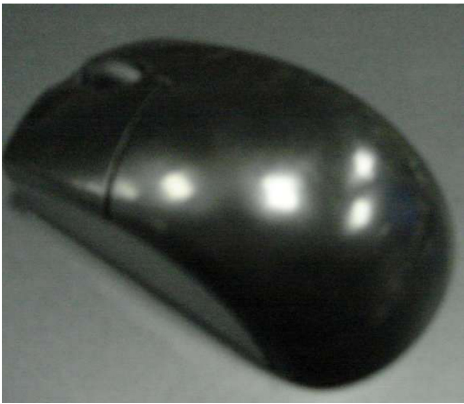
# 关于本手册 感谢您购买本款蓝牙鼠标套装。本手册涵盖的主题如下。（本款鼠标不含接收器销售。） # ♠ 产品介绍 ♠ 电池安装 ♠ WIDCOMM 蓝牙驱动程序的安装与卸载 ♠ 激光鼠标设置 ♠ 激光鼠标使用 ♠ WIDCOMM 蓝牙驱动程序使用 ♠ 故障排除
# 1. 产品介绍 # 产品特性 激光鼠标特性・带滚轮、左右键及侧倾滚轮・省电模式・LED 指示灯 a. 琥珀色：电量低 b. 绿色闪烁：鼠标正在配对 # USB 蓝牙接收器特性・兼容蓝牙 v1.2 及 v2.0 规范・支持鼠标设备・支持其他蓝牙设备 # 系统要求・支持蓝牙 / USB 鼠标的电脑・Microsoft Windows 98/ME/2000/XP 或更高版本
# 2. 安装电池 鼠标需使用两节 AA 型号电池。请按照以下步骤安装电池。
1. 按下按钮，电池仓盖弹出。
第 2 个 <PIC> → Manual27_1
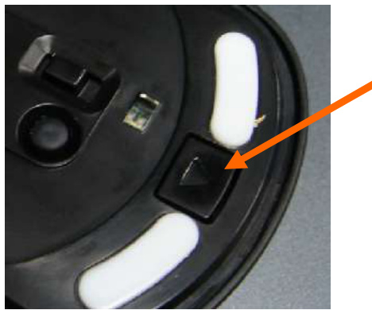
2. 按照鼠标内部标注的正负极（+ 和 -）装入两节 AA 电池。
第 3 个 <PIC> → Manual27_2
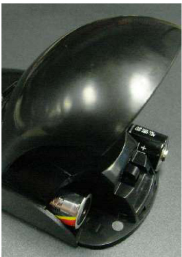
3. 装回电池仓盖
第 4 个 <PIC> → Manual27_3
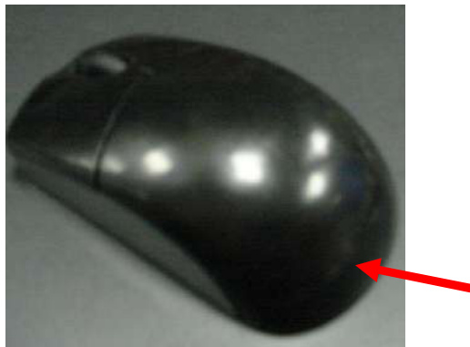
# 3 WIDCOMM 蓝牙驱动程序的安装与卸载 3.1 安装 WIDCOMM 蓝牙驱动程序 安装 WIDCOMM 蓝牙驱动程序前，请将 USB 蓝牙接收器插入电脑的 USB 接口。 1. 将附带的安装光盘放入光驱。 2. 驱动程序将自动加载。若未自动加载，请双击光驱中 bin 文件夹内的 Setup.exe。 3. 欢迎界面将引导您完成安装。点击 “下一步” 继续。
第 5 个 <PIC> → Manual27_4
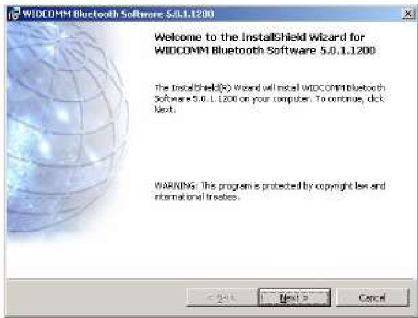
4. 阅读协议并选择 “我接受许可协议中的条款”。点击 “下一步” 继续。
第 6 个 <PIC> → Manual27_5
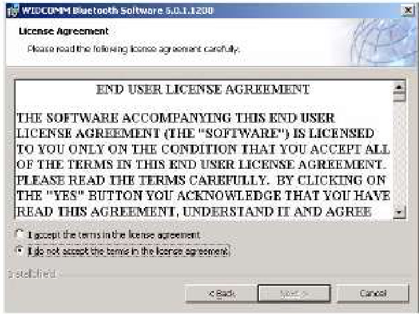
5. 程序将安装至图示文件夹。点击 “更改” 可选择其他安装路径。点击 “下一步” 继续。
第 7 个 <PIC> → Manual27_6
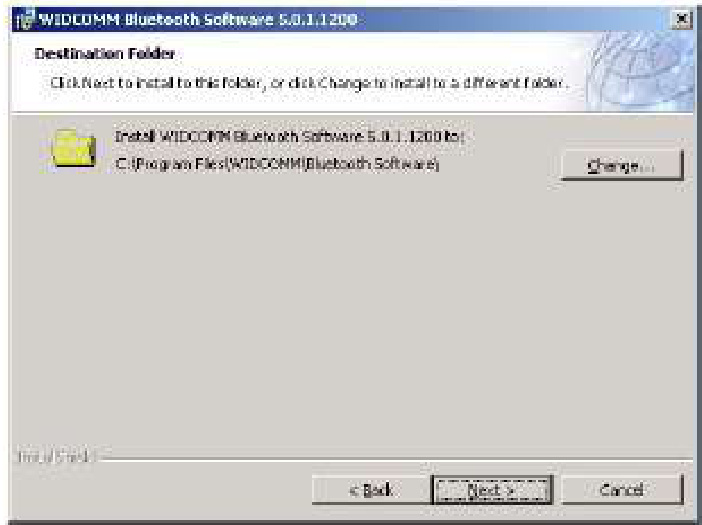
6. 点击 “安装” 开始安装。安装过程可能需要一些时间。
第 8 个 <PIC> → Manual27_7
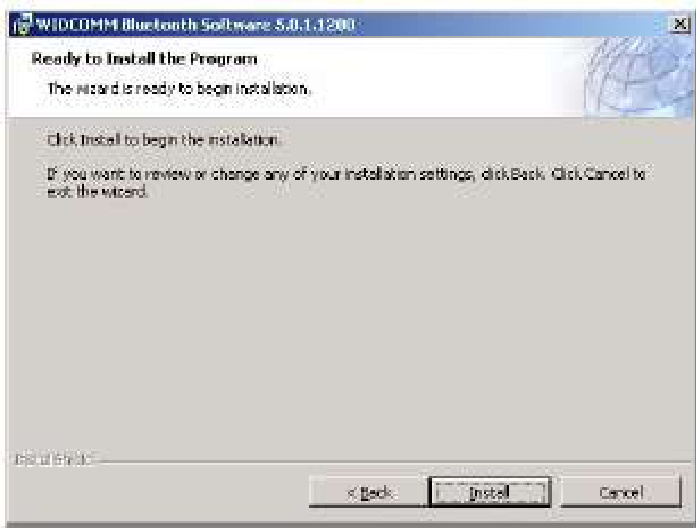
7. 出现以下界面表示安装完成。
第 9 个 <PIC> → Manual27_8
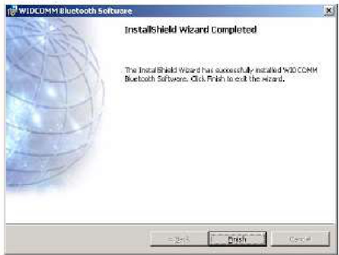
8. 拔下接收器重新插入，鼠标将自动配对。点击 “完成” 退出安装。 系统将提示您重启电脑以使蓝牙驱动生效。点击 “是” 立即重启，或 “否” 稍后重启。
第 10 个 <PIC> → Manual27_9
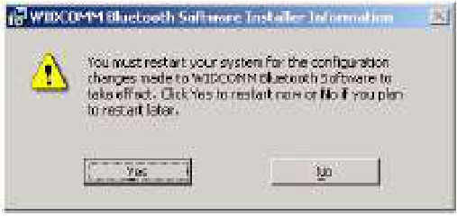
# 3.2 卸载 WIDCOMM 蓝牙驱动程序 请按照以下步骤从电脑中卸载 WIDCOMM 蓝牙驱动程序。 1. 拔下 USB 蓝牙接收器。 2. 点击 开始 > 设置 > 控制面板 > 添加或删除程序。 3. 在程序列表中选择 WIDCOMM 蓝牙软件，点击 “删除” 4. 系统开始卸载程序，此过程可能需要一些时间。 5. 程序卸载完成后，系统将提示重启电脑。点击 “是” 立即重启，或 “否” 稍后重启。 # 4. 激光鼠标设置 # 4.1 Windows 系统快速配对 蓝牙鼠标出厂默认已设置为预配对模式。如需快速配对，请按照以下步骤启用预配对模式。 1. 将 USB 蓝牙接收器插入电脑的 USB 接口。 2. 按下鼠标底部的配对按钮。 配对按钮
第 11 个 <PIC> → Manual27_10
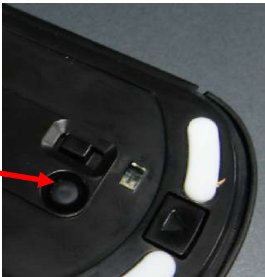
3. 按下 USB 蓝牙接收器底部的按钮，直至 LED 指示灯每秒闪烁一次。这表示蓝牙接收器已开始搜索待配对设备。（本款鼠标不含接收器销售。）
第 12 个 <PIC> → Manual27_11
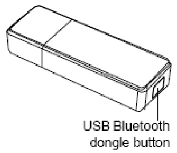
4. 移动鼠标以确认连接成功。 # 在 BIOS 中启用 USB 鼠标功能 若鼠标无法使用（更多可能情况请参阅第 14 页 “7 故障排除”），请检查 BIOS 设置中是否已启用鼠标的 USB 功能。 部分老旧电脑系统在 BIOS/DOS 环境下不支持 USB 键盘 / 鼠标。
# 4.2 通过 WIDCOMM 蓝牙驱动程序配对 使用蓝牙驱动程序进行鼠标配对前，请先按照 “3 WIDCOMM 蓝牙驱动程序的安装与卸载” 中的说明安装驱动程序。然后按照以下步骤操作。 1. 按下 USB 蓝牙接收器按钮，直至出现人机接口设备（HID）界面。
第 13 个 <PIC> → Manual27_12
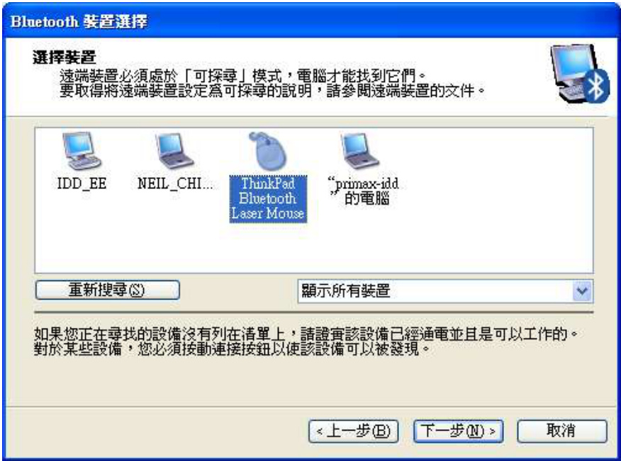
2. 鼠标连接成功后，将出现以下确认信息。点击确认连接正确的鼠标。
第 14 个 <PIC> → Manual27_13
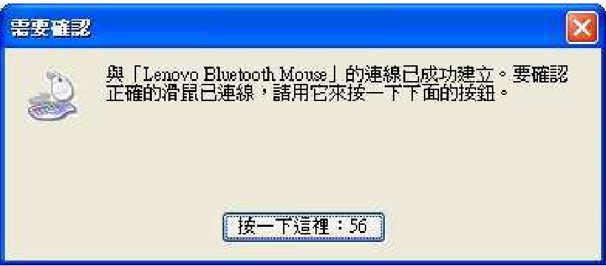
# 5 激光鼠标使用 按照 “4. 激光鼠标设置” 中的说明插入 USB 蓝牙接收器并完成鼠标蓝牙连接环境设置后，您即可立即开始使用鼠标。 # 5.1 激光鼠标电量状态 蓝牙鼠标配备电量 LED 指示灯。当电量耗尽时，LED 指示灯变为琥珀色。请立即更换电池。（顶部 LED 指示灯与底部指示灯状态一致）
第 15 个 <PIC> → Manual27_14
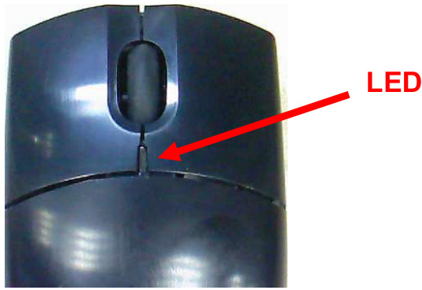
如需查看更详细的鼠标电量信息，请前往 控制面板 > 鼠标 > 蓝牙。
第 16 个 <PIC> → Manual27_15
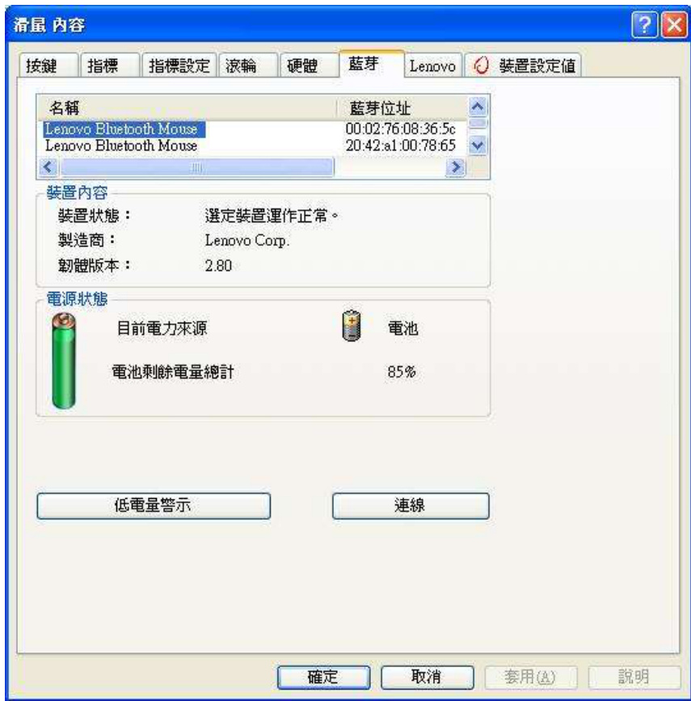
# 6. WIDCOMM 蓝牙驱动程序使用 6.1 首次使用驱动程序 要开始使用蓝牙驱动程序，请双击系统托盘中的蓝牙图标。
第 17 个 <PIC> → Manual27_16
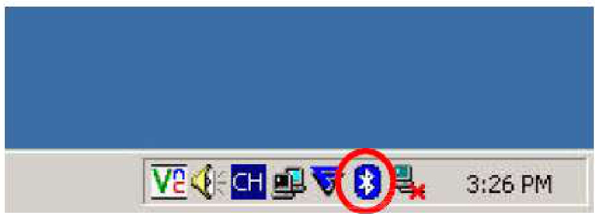
1. 蓝牙初始配置向导将启动。请按照屏幕上的说明完成配置。 2. 蓝牙配置完成后，将出现以下 HID 界面并开始搜索蓝牙设备。
第 18 个 <PIC> → Manual27_17
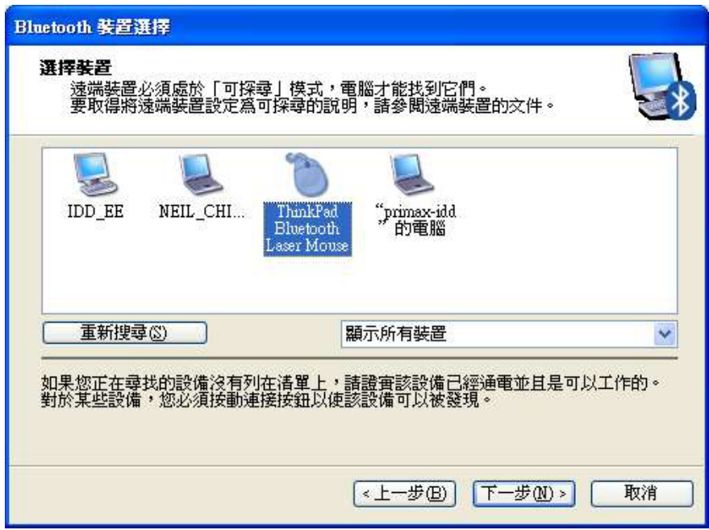
3. 点击您要连接的 HID 设备。然后按照屏幕上的说明启用所选设备。 # 关于蓝牙图标 蓝牙图标用于显示接收器状态。 1. 红色图标：未插入接收器。 2. 白色图标：接收器已插入。 3. 绿色图标：接收器已检测到 HID 设备。 # 6.2 连接其他 HID 设备 除鼠标外，蓝牙驱动程序还允许您连接其他蓝牙设备。 1. 确保 USB 蓝牙接收器已插入电脑。 2. 将您要连接的蓝牙设备（如打印机、调制解调器、掌上电脑）设置为可被蓝牙驱动程序搜索。 3. 按下 USB 蓝牙接收器按钮，直至出现以下 HID 界面。 4. 从下拉菜单中选择要搜索的设备类型。
第 19 个 <PIC> → Manual27_18
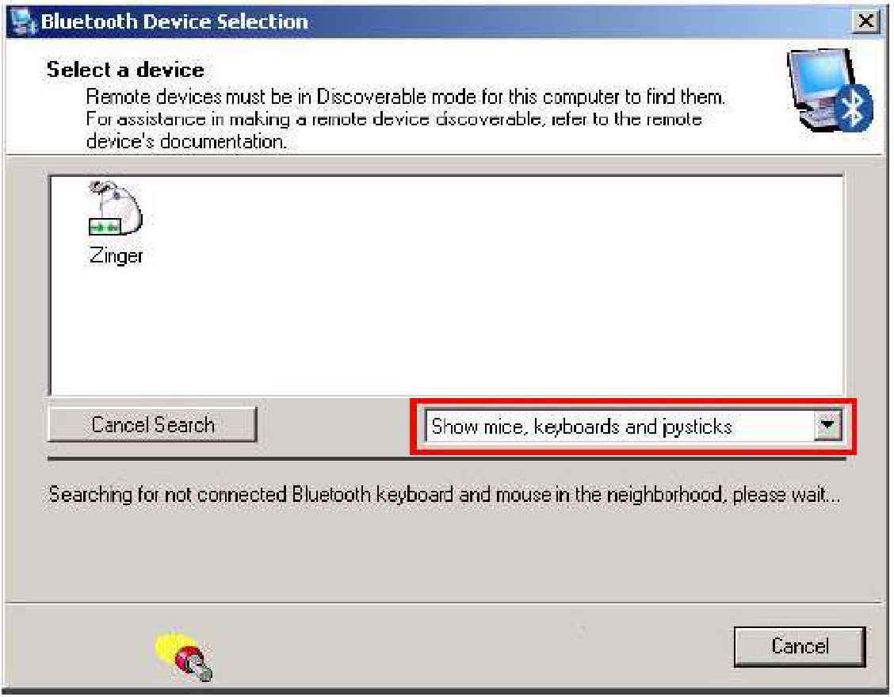
5. 将显示检测到的设备。点击设备，驱动程序将引导您启用连接。
# 7. 故障排除 若您的蓝牙鼠标出现任何问题，请检查以下事项：・检查系统要求，确保您的系统兼容。・检查鼠标电池是否安装正确。确保电池正负极与鼠标电池仓内的标识一致。・当鼠标 LED 指示灯亮起红色时，表示电量低。请立即更换新电池。・电脑安装蓝牙驱动程序后（请参阅第 4 页 “安装 WIDCOMM 蓝牙驱动程序”），您可通过 控制面板 > 鼠标 > 蓝牙 查看鼠标电量状态。・若鼠标无法工作，请检查系统 BIOS 中的 USB 鼠标功能。需启用该功能鼠标才能正常使用。・若电脑 BIOS 设置中有鼠标相关选项，请确保设置为默认值。若您不熟悉 BIOS 操作，请参阅电脑说明书获取更多信息。・请在干净、平整、不光滑的表面使用鼠标，以确保光标移动流畅精准。若使用鼠标垫，请选择浅色款，深色鼠标垫会增加电量消耗。 如您有其他问题需要进一步协助，请联系经销商获取技术支持。
# 美国联邦通信委员会干扰声明 本设备经测试符合 FCC 规则第 15 部分中关于 B 类数字设备的限制要求。 这些限制旨在为普通家庭安装提供合理的防有害干扰保护。 本设备会产生、使用并辐射无线电频率能量，若未按照说明书安装和使用，可能会对无线电通信造成有害干扰。 但不保证在特定安装环境中不会产生干扰。 若本设备对无线电或电视接收造成有害干扰（可通过开关设备判断），建议用户尝试通过以下措施消除干扰： - 重新调整或放置接收天线。 - 增加设备与接收器之间的距离。 - 将设备连接至与接收器不同电路的插座。 - 咨询经销商或有经验的无线电 / 电视技术人员获取帮助。 本设备符合 FCC 规则第 15 部分。操作需满足以下两个条件：（1）本设备不得产生有害干扰；（2）本设备必须接受任何接收到的干扰，包括可能导致异常操作的干扰。 FCC 警告： 未经合规责任方明确批准的任何更改或改装，都可能导致用户操作权限失效。 # 重要提示： FCC 辐射暴露声明： 本设备符合 FCC 针对非受控环境设定的辐射暴露限值。最终用户必须遵循特定操作说明以满足射频暴露合规要求。 本发射器不得与其他任何天线或发射器同轴放置或协同操作。 # 加拿大工业部声明 操作需满足以下两个条件：1）本设备不得产生干扰；2）本设备必须接受任何干扰，包括可能导致设备异常操作的干扰。
VR头显手册.txt
正文 5030 字 | <PIC> 占位符 10 个 | 图片列表 10 个
使用说明书
# 警告 使用本产品前，请仔细阅读本说明书及配套硬件的相关手册，并遵守所有警告及安装说明。请妥善保管，以备日后参考。
● VR头显不适用于12岁以下儿童。
● 若您感到疲劳、头晕、头昏、恶心、身体不适、处于醉酒或服药状态，或运动感、平衡感受损，请勿使用PS VR。若您患有严重疾病，使用PS VR前请咨询医生。
● 佩戴VR头显会限制您对周围真实环境的视野。VR头显无法检测障碍物。使用前，请检查并清理大于游玩区域的活动空间，清除所有障碍物。有关如何设置游玩区域的详细信息，请参阅“使用PS VR”章节（第8页）。确保您远离墙壁、楼梯、家具或其他可能导致碰撞或绊倒的障碍物。
● 使用期间，请采取措施防止宠物、他人或其他障碍物进入大于游玩区域的活动空间。
● 佩戴VR头显时，请待在游玩区域中央，切勿随意走动。尽可能保持坐姿，佩戴VR头显时避免头部、四肢或身体做出剧烈或过度动作。若应用程序要求您佩戴头显时站立，请务必严格遵循应用程序的指示。
● 开始游玩前，检查VR头显线缆是否缠绕在身体或四肢上，并在游玩过程中经常检查。
● 若您或您的孩子出现以下任何健康问题或症状，请**立即停止使用**，并咨询医生，经医生许可后方可继续使用：头晕、视觉异常、眼睛或肌肉抽搐、意识丧失、方向障碍、癫痫发作，或任何不自主运动及抽搐。**仅在医生许可后方可继续游玩。**
● 部分人可能会出现晕动症、恶心、方向障碍、视力模糊或其他不适症状。若出现此类情况，请立即停止使用并摘下VR头显。若使用后感到不适，请休息，且不要从事需要良好视力、平衡感或协调能力的活动，直至症状完全消失。
● 当您感到疲劳或需要睡眠时，请勿使用PS VR。
● 请勿在可能发生震动或其他不稳定的环境中使用PS VR。
● 适应虚拟现实体验可能需要一定时间。初次使用时，建议您短时间使用PS VR。
● 通常建议每游玩1小时，休息15分钟。但观看虚拟现实内容时，所需休息的时长和频率因人而异——请休息至不适感完全消退为止。
# 致英国用户
为安全与方便起见，本设备已配备成型插头。若需更换插头内的保险丝……在电视屏幕上观看或游玩电子游戏时。若游玩期间出现上述任何症状，请立即停止使用并咨询医生。
# 能效说明
有关欧盟（EU）第801/2013号法规中生态设计要求的相关信息，请访问以下网址：eu.playstation.com/Energy efficiency
# 光线刺激诱发的癫痫（光敏性癫痫）
若您患有癫痫或曾有癫痫发作史，游玩前请咨询医生。部分人在接触闪烁灯光或其他光线刺激时，可能会出现眼睛酸痛、视觉异常、偏头痛、肌肉抽搐、痉挛、昏厥、意识丧失或方向障碍。
# 出现以下症状时请立即停止游玩
除上述症状外，若游玩期间出现头痛、头晕、恶心、疲劳、类似晕动症的症状，或眼睛、耳朵、手、手臂、脚等身体任何部位感到不适或疼痛，请立即停止使用。若症状持续，请就医。
# 内容警告……2
注意事项……5
使用PS VR……8
部件名称……10
更换耳塞……13
保养与清洁……14
规格……15
版权及商标……17
# 注意事项
# 安全
● 请勿损坏电源线及电源适配器。
# 使用与操作
● 连接前，检查接口是否无灰尘及细小杂物。
● 请勿抓着线缆甩动VR头显或电源适配器。
● 待头显上的追踪灯熄灭后，再取下VR头显或拔下头显连接线。灯光亮起时取下或拔线可能导致设备故障。
● 请勿在产品上放置物品、投掷或摔落产品，或使其遭受强烈物理撞击。
● 请将本产品放置在幼儿接触不到的地方。幼儿可能吞咽细小零件、拉扯线缆导致处理器单元或VR头显坠落，或将线缆缠绕在身上，可能造成人身伤害、意外或设备故障。
● 雷雨天气时，请勿触碰电源线、电源适配器或处理器单元。
● 请勿让液体或细小颗粒进入产品内部（接口、通风口等）。若发生此情况，请立即停止使用并断开电源。
● 请勿将产品暴露在灰尘、烟雾或蒸汽中。灰尘等物质可能引发火灾或触电。
● 产品开机时，避免身体长时间接触处理器单元、电源适配器或通风口排出的空气。长时间接触可能导致低温烫伤*。
* 低温烫伤是指皮肤长时间接触温度相对较低（40℃及以上）的物体所造成的烫伤。
● 若VR头显、立体声耳机或立体声头戴设备（另售）导致皮肤不适，请停止使用。若使用后皮肤不适症状未消退，请立即停止使用并就医。
● 本产品及其部件由金属和塑料制成。废弃时，请遵守当地法规妥善处理此类材料。
● 请遵守以下注意事项，防止产品外壳老化或变色：
○ 请勿在产品上使用溶剂或其他化学药剂。
○ 避免橡胶或乙烯基材料与产品长时间接触。
● 以高音量使用头显或耳机可能导致永久性听力损伤。请将音量调至安全水平。随着时间推移，过大的音量可能听起来正常，但实际上会损害您的听力。若您出现耳鸣、耳部不适或听觉模糊，请停止聆听并检查听力。音量越大，听力受损越快。为保护听力：
○ 缩短以高音量使用头显或耳机的时间。
○ 请勿调高音量以隔绝环境噪音。
○ 若听不到身边人说话，请调低音量。
● 在特别干燥的环境下使用头显或耳机时，耳朵可能偶尔感受到短暂轻微的静电触击。这是人体积聚静电所致，并非头显或耳机故障。
# 儿童使用
VR头显不适用于12岁以下儿童。
# 佩戴VR头显
● 使用时正确佩戴VR头显非常重要。
○ 有关佩戴头显的说明，请前往系统功能界面查看。请勿将调节旋钮拧得过紧。
○ 调节镜罩位置后，您可佩戴眼镜使用PS VR。请勿过度推入或拉出镜罩。
● 定期检查产品佩戴状态，确保佩戴正确。
# VR头显屏幕
● 屏幕特定位置可能出现黑色（暗点）像素或常亮像素。此类斑点属于屏幕正常现象，并非系统故障。屏幕采用高精度技术制造。但每个屏幕仍可能出现极少数暗点或常亮像素，以及色彩或亮度不均。
● 保持VR头显的附着传感器（第11页）无遮挡。若附着传感器被遮挡，取下头显时屏幕可能不会自动关闭。若屏幕长时间显示同一画面，可能导致画面残留，形成永久性残影。
# 严禁拆卸或改装本产品及配件
请按照本说明书指示使用本产品及配件。未经授权，不得对本产品进行拆解、改装，或分析使用其电路结构。拆卸将导致产品保修失效。此外，还存在火灾、触电或故障风险。
# 结露
若PS VR从寒冷环境直接移至温暖环境，产品内部可能结露。此情况下，产品可能无法正常工作。请关闭产品，断开电源线。待水分完全蒸发后再使用（可能需要数小时）。若产品仍无法正常工作，请联系保修章节中对应的PlayStation客户服务热线。
# 异常或无响应操作
长按VR头显线控上的电源键（第11页）至少7秒强制关机，然后重新开机。若问题依旧，请重启系统。
# 高温提示
● 若处理器单元内部温度升高，屏幕将显示提示信息。此时，请关闭系统并静置一段时间。待处理器单元冷却后，将其移至通风良好的位置，再继续使用。
● 请勿遮挡处理器单元的通风口，请勿在封闭橱柜等易积热的环境中使用本产品。
# 电源适配器及电源线使用
● 使用易于插拔的电源，以便需要时可快速断开电源线。若产品出现异常运行、发出异常声音或气味、或过热发烫，请立即停止使用，断开电源线及其他所有线缆。
● 处理器单元状态指示灯为红色时，请拔下电源线。指示灯为白色或闪烁红色时拔线可能导致故障。
● 请勿使用产品标配以外的电源适配器或电源线。标配电源适配器及电源线专为该产品设计，不可用于其他产品。同样，其他适配器或电源线也不可用于本产品。违反此注意事项可能导致产品过热，引发火灾或触电。
○ 连接好HDMI线缆后，再将产品电源线插入电源。
○ 湿手请勿触碰电源插头。
○ 请勿用布覆盖使用中的电源适配器，否则可能积热引发火灾或故障。
○ 清洁或长期不使用产品时，请拔下电源线。
○ 请勿将电源线连接至电压变压器或逆变器。
# 存放条件
● 请勿将产品或配件置于高温、高湿或阳光直射的环境中。
● 请勿使用烘干机等厨房或加热设备烘烤产品，否则可能引发火灾、人身伤害或故障。
● 请勿将产品或配件放置在不稳定、倾斜或易震动的平面上。
# 使用PS VR
PS VR需与主机及摄像头配合使用，为您带来沉浸式虚拟现实体验。摄像头可捕捉VR头显的位置、角度及动作，让您更直接地与游戏互动。
请务必将系统软件更新至最新版本。
# 游玩区域
请在游玩区域内使用PS VR。游玩区域的高度取决于摄像头的捕捉范围。游玩区域的宽度和深度如下。
摄像头
第 1 个 <PIC> → Manual38_0
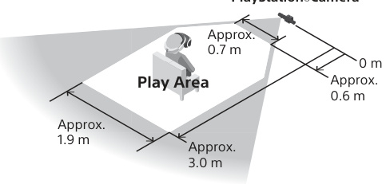
：摄像头捕捉范围
使用前，请检查并清理大于游玩区域的活动空间。
按照PS VR设置界面的指示调整摄像头位置及角度，使您处于VR模式的最佳游玩位置（游玩区域中央）。若使用VR模式时超出游玩区域，头显屏幕将出现警告。
若VR头显未被正确检测，长按控制器上的按键，然后从弹出的快捷菜单中选择[调整VR] > [确认位置]。调整摄像头位置及角度。
# 使用头显时的姿势
尽可能保持坐姿。支持站立模式的应用程序，请严格遵循其指示操作。
# VR设置
如需配置VR设置，请前往系统功能界面，然后选择（设置） > [设备] > [VR]。
● 仅当VR连接至主机时，这些设置才可用。
● 长按控制器上的按键弹出快捷菜单，也可配置部分设置。
● 有关VR设置的更多信息，请参阅主机用户指南。在功能界面中选择（设置） > （用户指南）。
系统包含家长或监护人可按需配置的设置，以限制儿童使用本产品。如需限制使用，请前往系统功能界面，选择（设置） > [家长控制] > [限制功能使用] > [VR] > [不允许]。
# 提示
● 配置设置需要家长控制密码。
● 所设限制适用于主机所有用户。
# VR头显
正面
第 2 个 <PIC> → vr_01
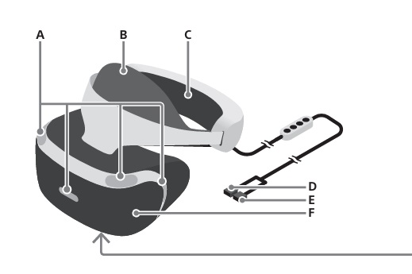
第 3 个 <PIC> → vr_02
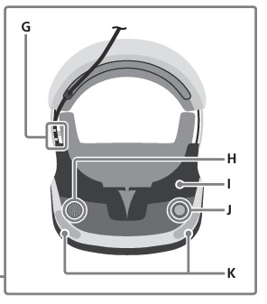
A）前侧追踪灯 后侧灯光 蓝色：已开机 所有灯蓝色：VR模式 灯灭：已关机
B）前侧头托
C）后侧头托
D）AUX接口
E）HDMI接口
F）镜罩
G）线缆挂钩
H）麦克风
I）遮光罩
J）镜罩调节键
K）前侧追踪灯
后侧
第 4 个 <PIC> → vr_03
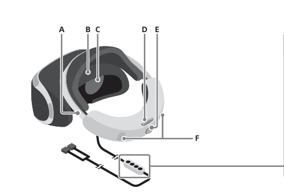
第 5 个 <PIC> → vr_04
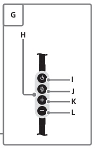
A）头带
B）附着传感器
C）镜片
D）调节旋钮
E）头带释放键
F）后侧追踪灯
G）线控
H）立体声耳机插孔
I）电源键
J）麦克风静音键
K）音量加键
L）音量减键
# 处理器单元
正面
第 6 个 <PIC> → Manual38_1
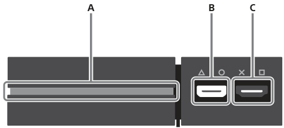
A）状态指示灯 白色：已开机 红色：待机模式
B）AUX端口
C）HDMI输出端口
背面
第 7 个 <PIC> → Manual38_2
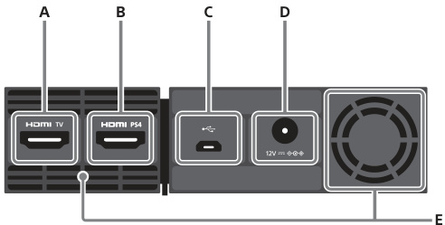
A）HDMI电视端口
B）HDMI PS4端口
C）USB端口
D）DC IN 12V接口
E）通风口
# 立体声耳机
第 8 个 <PIC> → Manual38_3
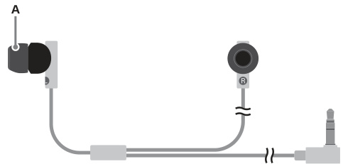
A）耳塞
# 更换耳塞
立体声耳机出厂时已安装M号耳塞。可更换为S号或L号耳塞以获得更贴合的佩戴效果。取下时，旋转耳塞后将其拔下即可。
第 9 个 <PIC> → Manual38_4
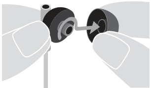
请牢固安装耳塞，防止使用过程中意外脱落。
# 保养与清洁
清洁时请务必遵守以下说明。
● 出于安全考虑，清洁前请拔下电源线并断开其他所有线缆。
● 请勿使用溶剂或其他化学药剂清洁产品外壳。
● 请勿使用经化学处理的清洁布擦拭产品。
# 处理器单元外壳、VR头显外壳、头托、接口
若有污渍，用柔软干布擦拭即可。
若处理器单元、电源线或其他部件上的接口变脏，可能导致信号传输异常。若耳机或头显接口不洁，还可能出现噪音或声音中断。
# 镜片
仅使用专用柔软干布擦拭镜片。请勿使用纸巾等非镜片专用纸质产品。
# 遮光罩
将遮光罩从VR头显上取下，用水清洗。用软布完全擦干后再装回头显。
将遮光罩上的凸点与头显上的13个孔对齐，重新安装即可。
第 10 个 <PIC> → Manual38_5
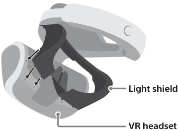
# 通风口
使用吸尘器等工具清除通风口积聚的灰尘。
# 耳塞
将耳塞从立体声耳机上取下，用中性洗涤剂手洗。用软布完全擦干后再装回耳机。取下耳塞的详细说明，请参阅“更换耳塞”（第13页）。
长时间接触水或灰尘可能损坏镜片并缩短其使用寿命。
在欧洲及土耳其地区，当您在电气产品或包装上看到此符号时，表示相关电气产品不应作为普通生活垃圾处理。为确保正确处理废弃物，请依照适用法律法规，通过授权回收设施进行处理。购买同类新产品时，也可将废弃电气产品交由零售商免费回收。此外，在欧盟国家，较大型零售商可免费回收小型废弃电子产品。请咨询当地零售商是否提供您所需废弃产品的回收服务。正确处理将有助于节约自然资源，并提升电气废弃物处理的环保标准。
相机手册.txt
正文 15839 字 | <PIC> 占位符 87 个 | 图片列表 87 个
第 1 个 <PIC> → Manual29_0
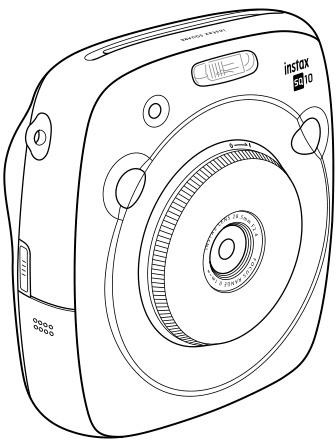
用户指南/故障排除/安全注意事项
# 目录 使用前 ................................................40 部件名称 ..............................................41 LCD显示屏显示内容 ..............42 选择按钮的使用 ............................42 指令拨盘的使用 ................................42 安装腕带 ..............................43 安装手带 ..............................43 安装肩带（另售） ..................................43 装入/充电电池 ........44 装入电池 ........................................44 电池充电 .......................................44 充电状态指示 ............................44 开启/关闭相机 ................45 查看剩余电量 ................45 进行初始设置 .................46 快门按钮功能设置 ..............................................47 装入/取出instax SQUARE相纸盒 .................................48 装入相纸盒 .....................................48 取出用完的相纸盒 .........................48 打印模式 ...............................................49 基本拍摄与回放 ..............................................50 拍摄照片 .................................................50 查看图像 .................................................51 更改回放显示 ...................51 打印 .....................................................52 图像效果 ..........................................53 滤镜 .......................................................................53 亮度调节 ...............................54 暗角 ................................................................54 拍摄进阶 ..........................................55 使用自动对焦/自动曝光锁定 ..............................................55 使用自拍 .........................................55 使用闪光灯 ..................................................56 更改拍摄模式 .........57 选择拍摄模式 ...........................57 从打印历史记录打印（重印） ...................................................58 使用存储卡 ..........................59 插入存储卡 ...........................59 打印其他相机拍摄的图像 .................................................59 菜单 .......................................................60 拍摄菜单 ..................................................60 回放菜单 ..................................................61 设置菜单 ........................................................62 规格参数 ....................................63 故障排除 ...........................65 重要安全须知 ............68 电池使用注意事项 ...........................72 阅读本用户指南后，请妥善保管在安全、易取之处，以便需要时查阅。
使用相机前，请检查以下内容。 确保包装内包含随附配件。 阅读“重要安全须知”（第68页）和“电池使用注意事项”（第72页）以确保安全使用。
使用相机前请阅读本用户指南。 # 随附配件 • NP-50可充电电池（1块）
第 2 个 <PIC> → Manual29_1
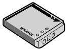
• 充电用USB线（1根）
第 3 个 <PIC> → Manual29_2
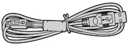
• 手带（1条）
第 4 个 <PIC> → Manual29_3
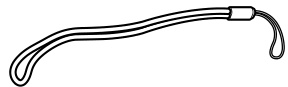
• 挂绳环（2个）
第 5 个 <PIC> → Manual29_4
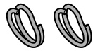
• 卡扣安装工具（1个）
第 6 个 <PIC> → Manual29_5
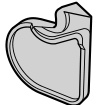
• 用户指南（1本） 部件名称
第 7 个 <PIC> → Manual29_6
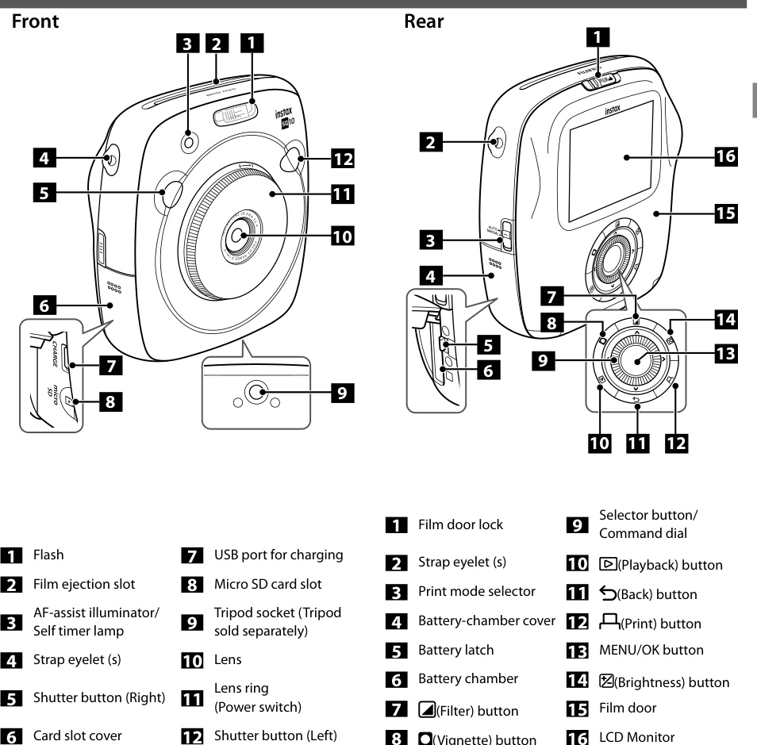
按下（返回）按钮将显示以下信息。 拍摄
第 8 个 <PIC> → Manual29_7
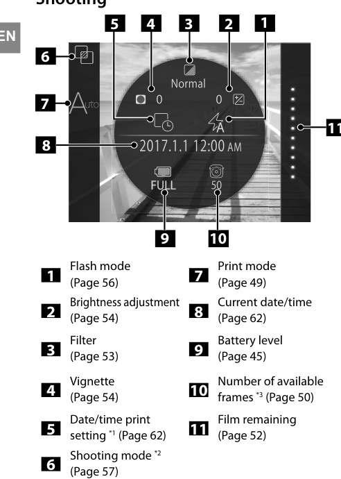
\*1 日期/时间打印设置关闭时，图标以灰色显示。 $^{*}2$ 选择标准模式时不显示。 $^{*3}$ 插入存储卡时，数字上会出现$\boxed{\begin{array}{r l}\end{array}}$图标。 剩余可拍摄张数低于10张时，数字上的图标会变为红色。 # 回放
第 9 个 <PIC> → Manual29_8
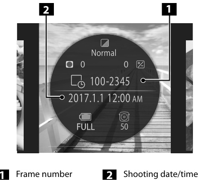
# 选择按钮的使用
第 10 个 <PIC> → Manual29_9
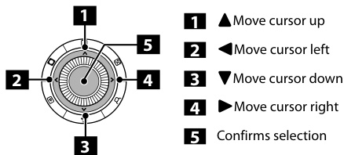
指令拨盘的使用
第 11 个 <PIC> → Manual29_10
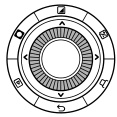
在以下情况下使用指令拨盘。• 选择菜单或项目 • 更改回放显示（第51页） • 调整图像效果参数（第53页和第54页） # 安装手带
按照下图所示安装腕带。• 携带或使用相机时，请将腕带套在手腕上，防止相机掉落。
第 12 个 <PIC> → Manual29_11
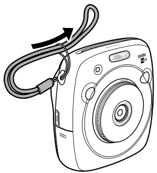
# 安装肩带（另售）
将肩带卡扣安装到相机上，然后安装肩带。 打开肩带卡扣。使用卡扣安装工具按图示打开肩带卡扣。
第 13 个 <PIC> → Manual29_12
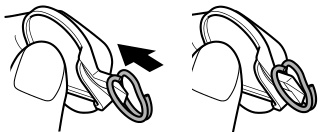
请妥善保管该工具。拆卸肩带时需要用它打开卡扣。 # 将肩带卡扣安装到每个挂绳环上。
将挂绳环钩入卡扣开口。用另一只手按住卡扣，取出工具。
第 14 个 <PIC> → hybrid_instant_camera_03
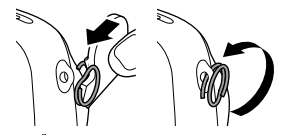
# 将卡扣穿过每个挂绳环。
将卡扣完全旋转穿过挂绳环，直至咔哒闭合。
第 15 个 <PIC> → hybrid_instant_camera_04
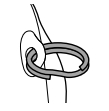
# 将肩带穿过每个卡扣。
第 16 个 <PIC> → hybrid_instant_camera_05
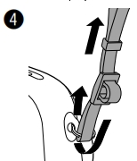
# 注意事项 • 肩带仅作肩带使用。请勿将肩带套在脖子上。 • 注意肩带不要遮挡相纸出口。 • 安装肩带时，挂绳环可能会磨损或褪色。
# 装入/充电电池 # 装入电池
第 17 个 <PIC> → Manual29_13
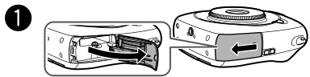
滑动电池盖将其打开。
第 18 个 <PIC> → Manual29_14
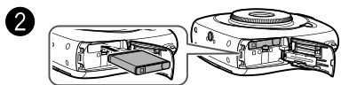
按照电池上的箭头指示装入电池。 确保电池上的黄线与相机上的标记对齐。• 取出电池时，将电池锁扣推向一侧，然后将电池滑出相机。
第 19 个 <PIC> → Manual29_15
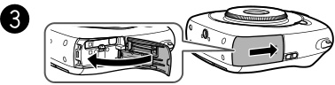
关闭电池盖。 电池充电 注意安装方向。
第 20 个 <PIC> → Manual29_16
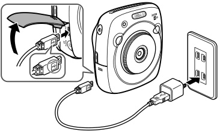
使用随附的USB线将相机与智能手机专用交流电源适配器连接，然后将交流电源适配器插入室内电源插座。
• 使用符合以下额定输出的交流电源适配器：直流5.0伏/1000毫安 • 充电过程中可以拍摄或打印图像。 • 充电时间约为三到四小时。 # 充电状态指示
第 21 个 <PIC> → Manual29_17
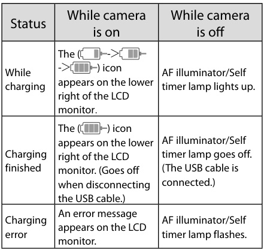
# 通过电脑充电： • 直接将相机与电脑连接。请勿通过键盘或USB集线器连接。 • 如果充电过程中电脑进入睡眠模式，充电将停止。如需继续充电，请唤醒电脑并重新连接USB线。 • 根据电脑规格、设置或状态，可能无法通过电脑为相机充电。 # 注意事项 • 出厂时电池未充满电。使用前务必充电。 • 阅读“电池使用注意事项”中的警告。（第72页）
要开机，请顺时针转动镜头环（电源开关）。要关机，请逆时针转动开关。 # 相机开机并显示拍摄画面
第 22 个 <PIC> → Manual29_18
# 相机关闭。
第 23 个 <PIC> → Manual29_19
# 查看剩余电量 在拍摄/回放画面按下$\leftrightarrow_{\mathsf{D(返回)}}$（返回）按钮，LCD显示屏上将显示剩余电量。
第 24 个 <PIC> → Manual29_20
$\twoheadrightarrow$ 电量不足时，LCD显示屏右下角会出现$(\overbrace{\phantom{\left(\sum\mathrm{~\textperth}\right)}})$图标。 电量耗尽时，LCD显示屏上会放大显示$(\overbrace{\mathsf{E M P}}^{\subset\supset})$图标，相机关闭。 • 若一段时间内无任何操作，相机会自动关机。您可以设置自动关机时间。（第62页） • 按下（回放）按钮显示回放画面并切换到回放模式。 • 回放模式下完全按下快门按钮显示拍摄画面并切换到拍摄模式。 • 镜头上的指纹等污渍会影响拍摄效果。请保持镜头清洁。
首次开机时，语言、日期和时间未设置。请按照以下步骤进行设置。 # 您可随时进行这些设置。如需后续设置或更改，请参阅第62页。 开机后显示语言选择画面。
选择语言，然后按下MENU/OK按钮或$\blacktriangleright$。
第 25 个 <PIC> → Manual29_21
语言设置完成，出现日期/时间画面。 设置日期格式，然后按下MENU/OK按钮或$\blacktriangleright$。
第 26 个 <PIC> → Manual29_22
选择以下格式之一。 • 年/月/日 • 月/日/年 • 日/月/年 日期格式设置完成，出现年、月、日、时、分设置画面。 设置年、月、日、时、分，然后按下MENU/OK按钮或$\blacktriangleright$。
第 27 个 <PIC> → Manual29_23
使用89键选择要设置的项目（年、月、日、时、分），然后使用67键设置数值。 设置快门按钮功能。
第 28 个 <PIC> → Manual29_24
详情请参阅第47页。 按下MENU/OK按钮。
快门按钮功能设置 在下表组合中为每个快门按钮分配功能。
第 29 个 <PIC> → Manual29_25
默认情况下，右快门按钮分配拍摄功能，左快门按钮分配拍摄模式切换功能。 在快门按钮设置画面显示时，使用$\blacktriangleleft$选择组合，然后按下MENU/OK按钮。
• 若跳过此步骤，每个画面出现时按下（返回）按钮即可进入拍摄画面。 • 长时间取出电池，设置值可能会清除。此时会出现语言选择画面，请重新设置。
# 装入/取出instax SQUARE相纸盒 # 注意事项 # 相纸用完前请勿打开后盖，否则剩余相纸会曝光变白，无法使用。
• 装入相纸盒时，切勿按压相纸盒背面的两个矩形孔。 • 切勿使用已过保质期的相纸盒，否则可能损坏相机。 仅使用instax SQUARE拍立得相纸。 instax mini相纸或instax WIDE相纸无法使用。 相纸盒注意事项 • 每盒instax SQUARE拍立得相纸包含1张黑色相纸保护盖和10张相纸。 • 装入相机前请勿将相纸盒从内袋中取出。 • 关闭后盖时，相纸保护盖会自动弹出。 详情请参阅instax SQUARE拍立得相纸上的说明和警告。 # 装入相纸盒
第 30 个 <PIC> → Manual29_26
按住相仓锁按钮（1），然后将拨杆向右滑动（$\boxdot$），直至相仓略微打开。
第 31 个 <PIC> → Manual29_27
握住相纸盒两侧，将相纸盒底部对准相仓凹槽（$\boxdot$），然后平直插入（2）。
第 32 个 <PIC> → hybrid_instant_camera_01
关闭后盖。 确保后盖锁咔哒到位。
第 33 个 <PIC> → hybrid_instant_camera_02
关闭后盖时，黑色相纸保护盖会自动弹出。 从相纸出口取出相纸保护盖。 # 取出用完的相纸盒 相纸用完时，拍摄画面右侧的所有点会以灰色显示。（第52页） 取出相纸盒。
第 34 个 <PIC> → Manual29_28
按住相仓锁按钮（1），然后将拨杆向右滑动（$\boxdot$），直至相仓略微打开。
第 35 个 <PIC> → Manual29_29
握住相纸盒上的矩形孔，然后平直拉出。 有两种打印模式。 # • 自动打印模式 • 手动打印模式（默认设置） 选择自动打印模式时，图像保存后立即开始打印。选择手动打印模式时，图像保存到内存中，您可稍后选择并打印。
# ■ 自动打印模式 将侧面的打印模式选择器切换到“AUTO”。
第 36 个 <PIC> → Manual29_30
拍摄画面上会出现以下图标。
第 37 个 <PIC> → Manual29_31
图像保存后立即开始打印。
第 38 个 <PIC> → Manual29_32
# ■ 手动打印模式（默认设置） 将侧面的打印模式选择器切换到“MANUAL”。
第 39 个 <PIC> → Manual29_33
拍摄画面上会出现以下图标。
第 40 个 <PIC> → Manual29_34
图像保存到内存中，您可稍后选择并打印，而非立即打印。
第 41 个 <PIC> → Manual29_35
# 基本拍摄与回放 # 拍摄照片 本节介绍基本拍摄操作。 顺时针转动镜头环（电源开关）开机。
第 42 个 <PIC> → Manual29_36
手持相机并确认最终图像的构图。
第 43 个 <PIC> → Manual29_37
选择拍摄模式或进行图像效果设置。（第53至57页） 半按快门对焦。
• 对焦成功：相机发出蜂鸣声，显示屏上出现绿色对焦框。 • 对焦失败：显示屏上出现红色对焦框。 更改构图或使用对焦锁定。（第55页） 完全按下快门拍摄照片。
照片拍摄完成并保存到相机内存。 • 若打印模式设为自动打印模式，图像将被打印。（第49页） • 拍摄时，请双手持机，肘部抵住身体。 • 按下快门时，注意不要触碰镜头表面。 • 完全按下快门时，请轻按。 • 注意手指或肩带不要遮挡闪光灯、镜头或相纸出口。 • 光线不足时，拍摄可能会触发闪光灯。您可更改闪光灯设置关闭闪光。（第56页） # 相机内存注意事项
• 内存已满时，快门无法释放，无法拍摄。删除内存中的图像或更换存储卡。 • 内存最多可保存约50张图像。使用存储卡时，每1GB可保存约1000张图像。 • 相机出现故障时，内存中的图像可能损坏或丢失。建议将重要图像备份到其他存储介质（如硬盘、CD-R、CD-RW或DVD-R等）。 • 送修时，我们不保证内存中图像的安全。 • 维修相机时，我们可能会检查内存中的图像内容。 # 基本拍摄与回放 # 查看图像
可在显示屏上查看图像。打印前请试拍并确认效果。 # 按下（回放）按钮。
第 44 个 <PIC> → Manual29_38
将显示最新拍摄的图像。 按下8键或$\blacktriangleright$选择要查看的图像。
第 45 个 <PIC> → Manual29_39
按下$\blacktriangleleft$显示上一张图像。按下$\blacktriangleright$显示下一张图像。 • 完全按下快门按钮返回拍摄画面。 更改回放显示 您可放大显示屏上的图像或更改单次显示的图像数量。
# ■ 图像放大 顺时针转动指令拨盘可放大显示屏上的图像。
第 46 个 <PIC> → Manual29_40
• 使用6789键移动查看区域。 • 按下MENU/OK按钮或$\leftrightarrow_{\mathsf{D(返回)}}$（返回）按钮取消放大。 • 可在放大状态下打印图像。（第52页） # ■ 更改显示屏显示图像数量 您可更改显示屏上单次显示的图像数量。逆时针转动指令拨盘可更改显示数量（单张、四张或九张）。
单张图像 四张图像 九张图像
第 47 个 <PIC> → Manual29_41
• 顺时针转动指令拨盘可更改显示数量（四张或单张）。 • 按下MENU/OK按钮或（返回）按钮取消多张显示。 • 可在显示四张或九张图像时打印。（第52页）
按照以下步骤打印图像。
• 选择自动打印模式时，拍摄后立即打印图像。（第49页） 按下（回放）按钮。
第 48 个 <PIC> → Manual29_42
将显示最新拍摄的图像。 按下8键或$\blacktriangleright$选择要查看的图像。
第 49 个 <PIC> → Manual29_43
按下$\blacktriangleleft$显示上一张图像。按下$\blacktriangleright$显示下一张图像。 根据需要调整图像效果。（第53页和第54页） 按下（打印）按钮。出现以下画面。
第 50 个 <PIC> → Manual29_44
按下MENU/OK按钮。
开始打印。 • 按下（返回）按钮可取消打印。
第 51 个 <PIC> → Manual29_45
相纸弹出后（相机停止发声），捏住相纸边缘取出。
# ■ 剩余相纸指示 显示屏右侧的点表示剩余相纸数量。每打印一张，一个点变为灰色。
第 52 个 <PIC> → Manual29_46
• 仅剩两张相纸时，点变为红色。 $\circledast$ 您可打印放大的图像或在一张相纸上打印四张或九张图像。步骤2显示要打印的图像时，使用指令拨盘切换到多张显示模式。（第51页）
• 取出相纸的详情请参阅instax SQUARE拍立得相纸包装上的说明和警告。 • 显影时间约为90秒。（时间随环境温度变化）
在拍摄/回放画面时，可直接按下背面的按钮选择效果菜单调整图像效果。
# 滤镜 在拍摄/回放画面按下（滤镜）按钮。
出现以下画面。
第 53 个 <PIC> → Manual29_47
使用指令拨盘选择滤镜。每种滤镜的详情请参阅右侧表格。 再次按下（滤镜）按钮。滤镜效果应用到图像并返回上一画面。
• 也可按下MENU/OK按钮或（返回）按钮返回上一画面。 • 长按（滤镜）按钮可取消滤镜效果。
# ■ 可用滤镜效果
第 54 个 <PIC> → Manual29_48
# 亮度调节 在拍摄/回放画面按下（亮度）按钮。
出现以下画面。
第 55 个 <PIC> → Manual29_49
使用指令拨盘调节亮度。
顺时针转动指令拨盘使图像变亮，逆时针转动使图像变暗。 再次按下（亮度）按钮。
调整后的亮度应用到图像并返回上一画面。 • 也可按下MENU/OK按钮或（返回）按钮返回上一画面。 • 长按（亮度）按钮可取消亮度调整。
# 暗角 调节图像四角亮度。按照以下步骤调整。 在拍摄/回放画面按下（暗角）按钮。
出现以下画面。
第 56 个 <PIC> → Manual29_50
使用指令拨盘调节四角亮度。
顺时针转动指令拨盘使四角变暗，逆时针转动使四角变亮。 再次按下（暗角）按钮。
调整后的亮度应用到图像并返回上一画面。 • 也可按下MENU/OK按钮或（返回）按钮返回上一画面。 • 长按（暗角）按钮可取消暗角调整。
# 图像效果注意事项：
• 调整后的参数或效果在拍摄后仍保留，但在其他设备（如电脑）上查看图像时无效。 • 可对一张图像应用多种效果。 • 长按$\tt SO(返回)$（返回）按钮可取消所有调整参数或效果。 • 根据拍摄对象或相机设置，图像可能会出现颗粒感或亮度、色调变化。
使用自动对焦/自动曝光锁定 半按快门按钮锁定对焦/曝光。自动对焦/自动曝光锁定适用于拍摄主体不在画面中心的情况。 将拍摄主体置于画面中心，然后半按快门按钮。
保持半按快门状态调整构图。 完全按下快门拍摄照片。
# 以下拍摄主体可能无法对焦，建议使用自动对焦/自动曝光锁定。
• 镜面或车身等非常光滑的物体 • 快速移动的物体 • 透过窗户或其他反射物体拍摄的主体 • 深色及吸光物体，如头发或皮毛 • 烟雾或火焰等不清晰主体 • 与背景对比度低的主体（如与背景颜色相同的主体） • 对焦框内同时存在高对比度前景或背景物体（如背景有高对比度元素的主体）
使用自拍 使用自拍功能可拍摄合影或减少按下快门时的抖动。 在拍摄画面按下MENU/OK按钮。
第 57 个 <PIC> → Manual29_51
出现拍摄菜单。 选择自拍，然后按下MENU/OK按钮。 选择10秒或2秒，然后按下MENU/OK按钮。
完全按下快门按钮。
• 选择10秒：按下快门后，自动对焦辅助灯/自拍指示灯亮起，拍摄前3秒开始闪烁。 • 选择2秒：按下快门后，自动对焦辅助灯/自拍指示灯闪烁。 • 按下（返回）按钮可取消自拍。
# 使用闪光灯 在夜间或室内光线不足时使用闪光灯。 在拍摄画面按下MENU/OK按钮。
第 58 个 <PIC> → Manual29_52
出现拍摄菜单。 选择闪光灯，然后按下MENU/OK按钮。 选择闪光灯设置，然后按下MENU/OK按钮。每种闪光灯设置的详情请参阅右侧说明。 按下快门拍摄。
# ■ 闪光灯设置 选择以下设置之一。
# 自动闪光灯 相机检测到光线不足时自动闪光。适用于大多数场景。
# 强制闪光 无论拍摄主体亮度如何，始终闪光。适用于逆光主体。
# 禁止闪光 即使拍摄主体光线不足也不闪光。适用于禁止闪光的场所。光线较暗时建议使用三脚架。
# 慢速同步 在暗处闪光灯与慢速快门同步（慢速同步），可清晰拍摄前景主体和背景。明亮环境下使用可能导致曝光过度。
# 红眼减轻&慢速同步 该设置可减少暗处使用闪光灯时因闪光灯反射视网膜造成的“红眼”现象。选择该设置时，闪光灯会预闪数次减轻红眼。
根据拍摄主体或用途选择拍摄模式。
# 选择拍摄模式 按照以下步骤选择拍摄模式。 在拍摄画面按下MENU/OK按钮。
第 59 个 <PIC> → Manual29_53
出现拍摄菜单画面。 选择拍摄模式，然后按下MENU/OK按钮或$\blacktriangleright$。 选择拍摄模式，然后按下MENU/OK按钮。
设置生效。 按下（返回）按钮。LCD显示屏返回拍摄画面。
# 拍摄模式
# 67' 标准模式 用于普通拍摄。相机检测到光线不足时自动闪光。可选择关闭闪光。（第56页）
# 长时间曝光模式 按住快门按钮时快门保持打开。用于拍摄夜景。需要使用桌面或三脚架。
• 根据亮度调整按下快门的时间。
# 双重曝光 按两次快门在一张照片中拍摄两个主体。拍摄第一个主体后，再拍摄第二个主体。 请按照显示屏上的说明操作。
$\twoheadrightarrow$ 使用分配了拍摄模式切换功能的快门按钮选择模式时，每次按下按钮都会切换模式。
# 从打印历史记录打印（重印） 使用之前打印时的相同设置（如图像效果）打印图像。 按照以下步骤操作。
# 按下（回放）按钮。
第 60 个 <PIC> → Manual29_54
将显示最新拍摄的图像。 按下MENU/OK按钮。出现回放菜单。 选择打印历史记录，然后按下MENU/OK按钮。
出现图像选择画面。 • 内存中最多存储最近50条打印记录。 • 超过50条时，新记录会覆盖最早的记录。 选择要打印的图像。
第 61 个 <PIC> → Manual29_55
按下$\blacktriangleleft$显示上一张图像。按下$\blacktriangleright$显示下一张图像。 • 可选择四张或九张显示模式。 按下（打印）按钮。 按下MENU/OK按钮。开始打印。
• 按下（返回）按钮可取消打印。 相纸弹出后（相机停止发声），捏住相纸边缘取出。
第 62 个 <PIC> → Manual29_56
• 无法将打印历史记录保存到存储卡。 • 初始化内存时，所有打印历史记录将被删除。（第62页） • 无法编辑或处理打印历史记录中的图像。
本相机内存可保存约50张图像。使用存储卡可保存更多图像。
# 存储卡注意事项
• 本相机支持micro SD/micro SDHC卡。使用其他卡可能损坏相机。 • 存储卡体积小，可能被误食，请放在儿童接触不到的地方。若儿童误食，请立即就医。 • 格式化存储卡或记录、删除数据时，请勿关闭相机或取出存储卡。否则可能损坏存储卡。 • 避免在强静电或电磁噪音环境中使用或存放存储卡。 • 插入带静电的存储卡可能导致相机故障。此时请关闭再重新开机。 • 请勿将存储卡放入口袋，以免受压损坏。 • 长时间使用相机后取出存储卡，卡可能发热，属于正常现象。 • 请勿在存储卡上粘贴标签。标签脱落可能导致相机故障。
# 在电脑上使用存储卡注意事项
• 首次使用前请格式化存储卡，在电脑或其他设备使用后务必重新格式化。 • 使用相机格式化的存储卡会自动创建文件夹。请勿使用电脑更改文件夹/文件名或删除文件夹，否则无法使用存储卡。 • 请使用相机删除图像文件。 • 编辑图像文件前请先复制或移动到硬盘，避免编辑原始文件。
# 插入存储卡 滑动卡槽盖打开。
第 63 个 <PIC> → Manual29_57
如下图所示，将存储卡平直插入卡槽底部直至咔哒到位。
第 64 个 <PIC> → Manual29_58
关闭卡槽盖。
第 65 个 <PIC> → Manual29_59
$\circledast$ 取出存储卡时，向内按压后缓慢松开，即可用手取出。
# 注意事项
• 取出存储卡时，用手指按压后轻轻松开，否则存储卡可能快速弹出。
# 打印其他相机拍摄的图像 插入包含图像的存储卡可打印其他相机拍摄的图像。但需满足以下条件。
• 将要打印的图像复制到根目录，而非文件夹中。 • 文件名由四个大写字母（A-Z）加四个数字组成。
# 拍摄菜单 按照以下步骤设置/更改拍摄菜单。 在拍摄画面按下MENU/OK按钮。
第 66 个 <PIC> → Manual29_60
出现菜单画面。 选择要更改的设置项目并修改设置。 按下MENU/OK按钮。设置生效。 按下（返回）按钮。LCD显示屏返回拍摄画面。
# ■ 拍摄菜单项目
# 拍摄模式 根据用途或场景选择拍摄模式。（第57页） • 也可使用在快门按钮设置中分配了拍摄模式切换功能的快门按钮。反复按下按钮选择拍摄模式。
# 闪光灯 选择闪光灯拍摄设置。（第56页）
# 自拍 选择自拍设置。（第55页）
# 自动对焦辅助灯 选择开启时，暗处对焦时自动对焦辅助灯会亮起辅助自动对焦。
选项：开启/关闭
• 某些情况下，使用自动对焦辅助灯可能无法对焦。 • 拍摄主体距离较近时，自动对焦辅助灯效果可能不佳。 • 避免将自动对焦辅助灯直射拍摄对象眼睛。
# 回放菜单 按照以下步骤设置/更改回放菜单。 在回放画面按下MENU/OK按钮。
第 67 个 <PIC> → Manual29_61
出现菜单画面。 选择要更改的设置项目并修改设置。 按下MENU/OK按钮。设置生效。 按下（返回）按钮。LCD显示屏返回回放画面。
# ■ 回放菜单项目
第 68 个 <PIC> → Manual29_62
# 删除 单张或全部删除图像。
选项：单张/全部
第 69 个 <PIC> → Manual29_63
# 复制 在相机内存和存储卡之间相互复制图像。按照以下步骤操作。
$\textcircled{1}$ 按下MENU/OK按钮或$\blacktriangleright$。
$\textcircled{2}$ 选择目标位置，然后按下MENU/OK按钮或$\blacktriangleright$。
$\textcircled{3}$ 选择单张或全部，然后按下MENU/OK按钮或$\blacktriangleright$。选择全部将立即开始复制。选择单张请继续步骤$\textcircled{4}$。
$\textcircled{4}$ 选择要复制的图像，然后按下MENU/OK按钮或$\blacktriangleright$。
第 70 个 <PIC> → Manual29_64
# 设置菜单 按照以下步骤设置/更改设置菜单。 在拍摄/回放画面按下MENU/OK按钮。
第 71 个 <PIC> → Manual29_65
出现菜单画面。 选择要更改的设置项目并修改设置。 按下MENU/OK按钮。设置生效。 按下（返回）按钮。LCD显示屏返回拍摄画面。
# ■ 设置菜单项目
第 72 个 <PIC> → Manual29_66
# 操作音量 调节操作音、快门音或开机音音量。
选项：关闭/1/2/3 选择关闭可禁用声音。
第 73 个 <PIC> → Manual29_67
# 自动关机 选择无操作时相机自动关机的时间。
选项：5分钟/2分钟/关闭
第 74 个 <PIC> → Manual29_68
# 格式化 初始化相机内存或插入卡槽的存储卡。所有保存的图像将被删除。
第 75 个 <PIC> → Manual29_69
# 相机 图像传感器 有效像素 存储介质 存储容量 # 文件系统 焦距 光圈 自动对焦系统 对焦范围 快门速度 感光度 曝光控制 测光 白平衡 闪光灯 拍摄模式 自拍 图像效果 回放功能 1/4英寸CMOS原色滤镜 1920×1920 内置内存、microSD/microSDHC存储卡 内置内存：约50张 microSD/microSDHC存储卡：每1GB约1000张 符合相机文件系统设计规则（DCF）、Exif 2.3标准、支持JPEG和PIM 固定28.5毫米（35毫米格式等效） F2.4 单次自动对焦（TTL对比检测，配备自动对焦辅助灯） 10厘米至无穷远 1/29500秒至1/2秒（自动），长时间曝光模式最长10秒 ISO 100至1600（自动） 程序自动曝光 256区TTL多点测光 自动 自动/强制闪光/禁止闪光/慢速同步/减轻红眼 有效范围：约50厘米至8米 标准、双重曝光、长时间曝光 约10秒/约2秒 16种滤镜、亮度调节、暗角 裁剪、多张图像回放
# 打印机 相纸 每盒打印数量 相纸尺寸 图像尺寸 支持图像尺寸 打印分辨率 打印等级 支持图像格式 打印时间 打印时机 打印功能 重印 数码变焦 相纸检测 其他 LCD显示屏 输入/输出端子 电池 充电功能 打印数量 充电时间 尺寸 重量 instax SQUARE拍立得相纸（另售） 10张/盒 86毫米×72毫米 62毫米×62毫米 800×800点 12.5点/毫米（318dpi，80微米点距） 每色256级（RGB） JPEG（部分经图像编辑/处理软件保存的图像可能无法显示或打印） 约12秒 拍摄后立即打印/选择图像后打印 内置内存/micro SD卡图像 最多可重印最近50张（打印历史记录最多存储50张图像） 打印时最高2.4倍变焦（输出像素：800×800） 支持（插入相纸自动弹出） 3.0英寸（7.6厘米）TFT彩色LCD显示屏 像素：约46万点 Micro USB（仅用于充电） NP-50 内置 约160张（充满电后） *随使用条件变化 约3至4小时（使用0.5A USB接口） *随气温变化 119毫米×47毫米×127毫米（宽×深×高） 450克（含相纸盒和电池）
*以上规格如有改进，恕不另行通知。
若认为相机出现故障，请查阅以下内容。如无法解决，请联系授权经销商。
操作过程中
第 76 个 <PIC> → Manual29_70
故障排除
第 77 个 <PIC> → Manual29_71
故障排除
第 78 个 <PIC> → Manual29_72
打印照片
第 79 个 <PIC> → Manual29_73
# 重要安全须知 本产品设计安全，按照用户指南和说明正确操作时可安全使用。 正确操作本产品和instax相纸，并仅按照本用户指南和instax mini相纸说明打印照片非常重要。 为方便和安全起见，请遵守本用户指南中的说明。 建议将本用户指南妥善保管在安全、易取之处，以便需要时查阅。
# 警告 本符号表示危险，可能导致受伤或死亡。请遵守以下说明。
# 警告 如果相机（或电池）发热、冒烟、有烧焦味或出现异常，请立即取出电池。此类故障可能引发火灾并造成烫伤。（取出电池或拔下USB线时请注意避免烫伤。）
如果相机掉入水中或有水、金属或其他异物进入相机内部，请立即取出电池，断开交流电源适配器并从插座拔下插头。此类故障可能导致相机过热或起火。
请勿在有易燃气体、开放汽油、苯、油漆稀释剂或其他可能释放危险蒸汽的不稳定物质附近使用本相机。此类故障可能导致相机爆炸或起火并造成烫伤。 切勿拆解电池。请勿加热、投入明火、尝试充电、短路、掉落或撞击电池。否则可能导致电池爆炸。仅使用相机用户指南中指定的电池类型。此类故障可能导致相机过热或起火。 请将电池存放在安全、牢固的地方，远离婴儿、幼儿和宠物。
电池可能被幼儿或宠物误食。如发生此类情况，请立即就医。 仅使用相机指定的电池。此外，请勿使用非指定电压的电源。使用其他电池可能导致相机过热或起火。
第 80 个 <PIC> → Manual29_74
切勿拆解本产品。否则可能受伤。相机出现故障时，切勿自行维修。否则可能受伤。 本产品掉落或损坏导致内部外露时，请勿触摸。请联系经销商。 请勿触摸后盖内的任何部件或突出部分。否则可能受伤。 切勿让本产品受潮或湿手操作。否则可能导致触电。 请勿混用新旧电池或不同类型电池。同时确保电池正负极安装正确。 电池损坏或漏液可能导致火灾、受伤并污染环境。 如果相机长时间不使用（如外出旅行），请取出电池，断开交流电源适配器并拔下USB线。否则可能引发火灾。 连接USB线时请勿移动相机。否则可能损坏USB线，引发火灾或触电。 请放在儿童接触不到的地方。儿童使用本产品可能导致受伤。
请勿用布或毯子覆盖或包裹相机或交流电源适配器。否则可能导致热量积聚，变形或引发火灾。 使用相机时，请确保电池盖已安装，否则可能受伤。
“CE”标志证明本产品符合欧盟关于安全、公共卫生、环境和消费者保护的要求。 # 美国用户：
# FCC声明 本设备符合FCC规则第15部分。操作需符合以下两个条件：(1) 本设备不会产生有害干扰；(2) 本设备必须接受任何收到的干扰，包括可能导致异常操作的干扰。
# 警告 本设备经测试符合FCC规则第15部分中B类数字设备的限制。这些限制旨在为住宅安装提供合理的抗干扰保护。
本设备会产生、使用并辐射射频能量，如果未按照说明安装和使用，可能会对无线电通信造成有害干扰。但是，不保证在特定安装中不会产生干扰。 如果本设备对无线电或电视接收造成有害干扰（可通过开关设备判断），建议用户采取以下措施纠正干扰：
• 调整接收天线方向或位置 • 增加设备与接收器之间的距离 • 将设备连接到与接收器不同电路的插座 • 咨询经销商或有经验的无线电/电视技术人员 未经责任方明确批准的更改或修改，可能使用户无权操作本设备。
# 加拿大用户：
警告：本B类数字设备符合加拿大ICES-003标准。
第 81 个 <PIC> → Manual29_75
家用电子电气设备废弃处理 废弃电子电气设备
（适用于欧盟及其他有单独收集系统的欧洲国家） 本产品、手册、保修卡及/或包装上的符号表示本产品不应作为生活垃圾处理。
而应送至指定的电子电气设备回收点。
正确处理本产品有助于防止对环境和人类健康造成潜在负面影响。 如果设备含有易拆卸电池或蓄电池，请根据当地规定单独处理。
材料回收有助于节约自然资源。 有关本产品回收的更多详细信息，请联系当地市政部门、生活垃圾处理部门或购买商店。
欧盟以外国家：如欲废弃本产品，请联系当地部门咨询正确处理方式。
# 相机日常保养常识
# 相机保养
$\textcircled{1}$ 本相机为精密仪器。请勿受潮、掉落或暴露在沙尘中。
$\textcircled{2}$ 请勿使用手机或其他类似电子产品的挂绳。此类挂绳通常强度不足，无法牢固固定相机。为安全起见，仅使用相机专用挂绳，并严格按照说明使用。
$\textcircled{3}$ 使用三脚架时，请检查三脚架强度，然后转动三脚架安装相机，而非转动相机机身。 将相机安装到三脚架上时，请勿过度转动三脚架螺丝或施加过大压力。 请勿携带安装在三脚架上的相机。否则可能导致人身伤害或相机损坏。
$\textcircled{4}$ 长时间不使用相机时，请取出电池，存放在隔热、防尘、防潮的地方。
$\mathfrak{S}$ 请勿使用稀释剂、酒精等溶剂清洁污渍。
$\textcircled{6}$ 保持相仓和相机内部清洁，避免损坏相纸。
$\textcircled{\scriptsize{2}}$ 炎热天气下，请勿将相机留在车内或海滩等高温处。请勿长时间存放在潮湿环境中。
$\circledast$ 樟脑丸等驱虫剂气体可能影响相机和照片。存放相机或照片时请注意。
$\textcircled{9}$ 由于本相机由软件控制，极少数情况下可能出现故障。如出现操作异常，请取出电池，等待片刻后重新装入复位。
$\textcircled{0}$ 相机使用温度范围为+5℃至+40℃（+41℉至+104℉）。
$\textcircled{\scriptsize{1}}$ 务必确保打印内容不侵犯版权、肖像权、隐私或其他个人权利，不违反公共道德。 侵犯他人权利、违反公共道德或造成滋扰的行为可能会受到法律制裁或追究法律责任。
# 打印注意事项
第 82 个 <PIC> → Manual29_76
# instax SQUARE相纸与照片保养 请参阅instax SQUARE相纸使用说明。遵守所有安全正确使用的说明。
$\textcircled{1}$ 请将相纸存放在阴凉干燥处。请勿长时间留在温度极高的地方（如密闭车内）。
$\circledcirc$ 装入相纸盒后，请尽快使用。
$\textcircled{3}$ 相纸存放在极高温或低温环境后，使用前请恢复至室温。
$\circledast$ 请在保质期或“使用期限”前使用相纸。
$\mathfrak{S}$ 避免机场托运行李检查等强X光照射。未使用的相纸可能出现雾化等影响。 建议将相机和/或相纸随身携带上飞机。（详情请咨询各机场）
$\textcircled{\scriptsize{2}}$ 避免强光照射，显影后的照片请存放在阴凉干燥处。
$\circledast$ 请勿刺穿、撕裂或裁剪instax SQUARE相纸。相纸损坏请勿使用。
# 相纸与照片处理注意事项 详情请参阅instax SQUARE拍立得相纸上的说明和警告。
第 83 个 <PIC> → Manual29_77
# 电池使用注意事项
• 请确保正确使用相机。 使用前请仔细阅读这些安全注意事项和用户指南。
• 阅读这些安全注意事项后，请妥善保管。
第 84 个 <PIC> → Manual29_78
第 85 个 <PIC> → Manual29_79
# 电池
以下说明电池的正确使用方法和延长寿命的技巧。使用不当可能缩短电池寿命或导致漏液、过热、火灾或爆炸。 出厂时电池未充电。
使用前请充满电。
# ■ 电池注意事项 电池不使用时电量会逐渐流失。
使用前1至2天充电。 不使用时关闭相机可延长电池寿命。
低温下电池容量下降；电量耗尽的电池在低温下可能无法工作。 请将充满电的备用电池放在温暖处，必要时更换；或将电池放在温暖处，拍摄时再装入相机。
请勿将电池直接与暖手宝或其他加热设备接触。
# ■ 电池充电 使用随附的USB线充电。 环境温度低于+10℃（+50℉）或高于+35℃（+95℉）时，充电时间会延长。
请勿在温度高于40℃（+104℉）时充电；温度低于+5℃（+41℉）时，电池无法充电。 请勿为充满电的电池再次充电。
但电池无需完全放电后再充电。 充电或使用后电池可能发热，属于正常现象。
# ■ 电池寿命 正常温度下，电池可重复充电约300次。
电池续航时间明显缩短时，说明已达到使用寿命，应更换。
# ■ 存放 充满电长时间存放可能影响性能。
存放前请将电量完全耗尽。 相机长时间不使用时，请取出电池，存放在干燥、温度+15℃至+25℃（+59℉至+77℉）的环境中。
请勿存放在温度极端的地方。
# ■ 注意事项：电池处理
• 请勿在电池上粘贴标签或其他物品。 • 请勿撕裂或剥离外部标签。
• 保持电极清洁。 • 长时间使用后，电池和相机机身可能发热，属于正常现象。
# ■ 废弃处理 按照当地规定处理废旧电池。
# 相机认证标志位于相仓内部。
第 86 个 <PIC> → Manual29_80
您购买的产品由可回收锂离子电池供电。
请拨打1-800-8-BATTERY咨询电池回收信息。
第 87 个 <PIC> → Manual29_81
电池或蓄电池上的符号表示这些电池不应作为生活垃圾处理。
# 欧盟、挪威、冰岛和列支敦士登以外国家：
如欲废弃含电池或蓄电池的本产品，请联系当地部门咨询正确处理方式。
如有任何关于本产品的疑问，请联系授权经销商或访问以下网站。
冰箱手册.txt
正文 7541 字 | <PIC> 占位符 58 个 | 图片列表 58 个
# 重要安全说明 # 基本安全注意事项 本手册包含多项重要安全提示。请始终阅读并遵守所有安全说明。 这是安全警示符号。它用于提醒您注意安全提示，告知您可能导致您或他人伤亡、或造成产品损坏的危险。所有安全提示前均会标注安全警示符号及危险警示词：危险、警告或注意。这些词语含义如下： 危险 不遵守说明将导致死亡或重伤。 警告 不遵守说明可能导致死亡或重伤。 注意 表示存在潜在危险，如不避免，可能导致轻微或中度伤害，或仅造成产品损坏。 所有安全提示均会说明危险、告知如何降低受伤风险以及不遵守说明可能产生的后果。 # 重要安全说明 # 警告 为降低使用产品时发生火灾、触电或人身伤害的风险，应遵守基本安全预防措施，包括以下内容。使用本电器前请阅读所有说明。 # 1. 连接电源时 # 应使用专用插座。
• 一个插座同时使用多个设备可能引发火灾。
• 若本机连接漏电保护器，保护器可能跳闸，导致食物变质。
# 请勿让电源插头朝上或被挤压在冰箱冰柜背面。
若电源线被挤压在冰箱后方，可能损坏线缆引发火灾。插头朝上可能因线缆自重松脱，导致电气故障、引发火灾或冰箱停机导致食物变质。
# 安装过程中拔下插头后推入冰箱时，防止电源线被挤压或弯折。
线缆被挤压或弯折可能引发火灾或触电。将电器从墙面移开时，注意不要碾压或损坏电源线。 # 请勿让重物挤压或弯折电源线。
可能损坏电源线，引发火灾或触电。
# 重要安全说明 # 请勿延长或改装电源插头长度。
可能引发火灾或触电。
# 清洁、操作或更换冰箱冰柜内部灯泡时，请拔下电源插头。
• 可能引发触电或伤害。
• 更换冰箱冰柜内部灯泡时，确保灯座内的绝缘橡胶圈未被取下。
# 请勿拉扯电源线或用湿手触碰电源插头。
可能引发触电或伤害。
# 清除电源插头上的水渍或灰尘，确保插脚完全牢固插入。
灰尘、水渍或接触不良可能引发火灾或触电。
# 请勿拉扯电源线断电。务必握住插头头部拔下。
拉扯线缆可能损坏线缆，导致触电或火灾。
# 重要安全说明 # 确保接地可靠。 若不完全理解接地说明或对电器是否正确接地存在疑问，请咨询合格电工或维修人员。
接地不当在发生故障时可能导致触电。
# 务必按照当地法规为设备接地。
接地不当可能引发火灾。
# 若电源线或电源插头损坏、插座插孔松动，请勿使用。
可能引发触电或火灾。
第 10 个 <PIC> → Manual17_9
# 重新插拔插头时请等待5分钟或更长时间。
可能导致冰箱运行故障。
第 11 个 <PIC> → Manual17_10
# 2. 使用冰箱冰柜时 # 请勿在冰箱顶部放置重物或装液体的物品。
开关门时重物可能坠落导致受伤。装液体的物品可能泄漏、掉落破损，导致受伤或触电。
第 12 个 <PIC> → Manual17_11
# 请勿倚靠或悬挂在冰箱门体及搁架上。
可能损坏冰箱门体或搁架，或导致冰箱倾倒，造成受伤及损坏。儿童靠近冰箱时请务必有人看管。
第 13 个 <PIC> → Manual17_12
# 重要安全说明 # 防止儿童进入产品内部。
儿童进入冰箱可能危及生命。
第 14 个 <PIC> → Manual17_13
# 开关冰箱门时请小心。用力开关门可能导致内部物品倾倒，造成受伤或损坏。 # 请勿将冰箱安装在潮湿环境中。
湿气可能渗入电气部件，引发火灾或触电。
第 15 个 <PIC> → Manual17_14
# 请勿在冰箱内或周围存放或使用易燃物品。
可能引发爆炸或火灾。
第 16 个 <PIC> → Manual17_15
# 请勿在冰箱内使用或放置加热、明火类香氛产品（如香薰蜡烛、香炉）除臭。
可能引发爆炸或火灾。
第 17 个 <PIC> → Manual17_16
# 重要安全说明 # 请勿在冰箱冰柜内存放药品或学术实验用品。
存放有严格温度限制的物品（如药品）可能导致其变质或发生不良反应，带来危害或风险。
第 18 个 <PIC> → Manual17_17
# 请勿在冰箱冰柜附近使用易燃喷雾。
可能引发爆炸或火灾。
第 19 个 <PIC> → Manual17_18
# 远离加热设备。安装位置远离明火，如壁炉、加热器，避免靠近燃气相关产品。
可能引发爆炸或火灾。
第 20 个 <PIC> → Manual17_19
# 请勿在冰箱冰柜上放置花瓶、水杯、化妆品、药品或任何盛水容器。
可能掉落、泄漏，导致触电或火灾。
第 21 个 <PIC> → Manual17_20
# 遇强雷雨天气或设备长期不使用时，
可能出现电气损坏，导致触电或火灾。
第 22 个 <PIC> → Manual17_21
# 重要安全说明 # 被水浸泡损坏的设备，在经持证电工或同等资质人员确认安全前，请勿使用。
可能引发触电或火灾。
第 23 个 <PIC> → Manual17_22
# 发生燃气泄漏时，请勿触碰冰箱冰柜或插座，立即开窗通风。
• 火花引发的爆炸可能导致火灾或烧伤。
• 本冰箱冰柜采用环保制冷剂天然气（异丁烷，R600a），即使少量（80~90克）也具有可燃性。运输、安装或使用过程中因严重损坏导致制冷剂泄漏时，任何火花都可能引发火灾或烧伤。
第 24 个 <PIC> → Manual17_23
# 请勿向冰箱内外直接喷水。请勿在冰箱上使用酒精或矿物类清洁剂（如苯、稀释剂）。
这些物质可能腐蚀或渗入绝缘层及电气部件，导致触电、火灾或冰箱损坏。
第 25 个 <PIC> → Manual17_24
# 发现冰箱冰柜有异味或冒烟时，立即拔下电源插头并联系售后服务中心。
继续使用可能导致损坏或火灾。
第 26 个 <PIC> → Manual17_25
# 重要安全说明 # 除专业工程师外，任何人不得拆卸、维修或改装冰箱冰柜。
可能导致受伤、触电或火灾。
第 27 个 <PIC> → Manual17_26
# 请勿将冰箱冰柜用于非家用用途（存放药品、实验材料或移动使用）。
可能引发火灾、触电、存放物品变质或化学反应等意外风险。
第 28 个 <PIC> → Manual17_27
# 废弃处理冰箱冰柜时，请拆下冰箱门。
否则可能导致儿童被困在内。
第 29 个 <PIC> → Manual17_28
# 本电器不适合肢体、感官或精神障碍者，以及缺乏经验和知识的人员（包括儿童）使用，除非有负责其安全的人员对其进行使用监督或指导。 # 应看管儿童，确保其不玩耍本电器。 # 重要安全说明 # 将冰箱冰柜安装在坚固平整的地面上。
安装在不稳定位置，开关门时冰箱可能倾倒，导致伤亡。
第 30 个 <PIC> → Manual17_29
# 请勿将手或金属物品伸入冰箱冷气出口、盖板、底部及背部隔热格栅（排气孔）。
可能引发触电或受伤。
第 31 个 <PIC> → Manual17_30
# 注意 违反本说明可能导致受伤或房屋、物品损坏。请务必小心。 # 请勿用湿手触碰冷冻室内的食物或容器。
可能导致冻伤。
第 32 个 <PIC> → Manual17_31
# 确保所有食物及容器稳定存放或堆叠。
开关冰箱门时食物可能掉落伤人。 # 请勿将装满液体的瓶子放入冷冻室。
液体结冰可能导致瓶子破裂，造成受伤。
第 33 个 <PIC> → Manual17_32
# 重要安全说明 # 请勿将手伸入冰箱冰柜底部。
底部铁板可能造成受伤。
第 34 个 <PIC> → Manual17_33
# 搬运冰箱冰柜时，请握住前底部及后顶部把手。
否则可能手滑导致受伤或产品损坏。因产品较重，单独搬运可能伤人或发生意外。
第 35 个 <PIC> → Manual17_34
# 开关冰箱冰柜门可能伤及周围人员，请注意。
同时打开两扇门可能导致手指或手部被门缝挤压。打开的门体边角可能碰伤儿童（尤其是冷冻室门下边缘易被忽视）。
第 36 个 <PIC> → Manual17_35
# 请勿将任何活物放入冰箱冰柜。
第 37 个 <PIC> → Manual17_36
# 重要安全说明 # 警告 # 注意事项 • 本冰箱冰柜使用前必须按照安装说明正确安装与放置。 • 安装本冰箱冰柜前请参阅安装手册。 • 切勿拉扯电源线拔下冰箱冰柜插头。务必握紧插头，直接从插座拔出。 • 冰箱冰柜运行后，请勿触摸冷冻室低温表面，尤其是手部潮湿时。皮肤可能粘连在极冷表面。 • 清洁冰箱冰柜前请拔下电源插头。切勿损坏、过度弯折、拉扯或扭曲电源线，电源线损坏可能引发火灾或触电。切勿将玻璃制品放入冷冻室，内部液体结冰可能导致破裂。 • 请勿直接向冰箱冰柜内外喷水。有爆炸或火灾风险。 • 请勿湿手插拔电源插头，以免触电。 • 请勿将冰箱冰柜安装在潮湿或易被水溅到的地方。水可能渗入电气部件，引发火灾、触电或损坏。 # 重要安全说明 • 请勿拆卸、维修或改装本电器，可能引发火灾或异常运行，导致受伤。 • 更换冰箱内部灯泡前请拔下电源插头，否则有触电风险。 • 尽可能为冰箱冰柜配备独立电源插座，避免与其他电器或家用灯具共用导致过载。 # 请勿改装或延长电源线长度
会导致触电或火灾。
第 38 个 <PIC> → Manual17_37
# 电源插头可触及性
冰箱冰柜的电源插头应放置在紧急情况下可快速断开的易触及位置。 # 电源线更换
若电源线损坏，必须由制造商、其售后服务人员或同等资质人员更换，以避免危险。 # 危险
有儿童被困风险。 丢弃旧冰箱或冰柜前： 拆下门体。 保持搁架原位，防止儿童轻易爬入。 # 禁止存放
请勿在本电器或任何电器附近存放或使用汽油或其他易燃蒸汽与液体。 # 接地保护
发生短路时，接地保护通过为电流提供泄放线路降低触电风险。为防止触电，本电器必须接地。接地插头使用不当可能导致触电。 # 重要安全说明 # 警告 保持电器外壳或嵌入式结构内的通风口畅通无阻。除制造商推荐外，请勿使用机械设备或其他方式加速化霜过程。请勿损坏制冷剂回路。除非为制造商推荐类型，否则请勿在电器食品储藏室内使用电器。 本电器使用的制冷剂及绝缘发泡气体需要特殊处理。废弃处理时请咨询售后服务人员或同等资质人员。 本电器含少量异丁烷制冷剂（R600a），为环保型天然气，但具有可燃性。运输与安装电器时，应确保制冷回路无损坏。管道喷出的制冷剂可能引燃或导致眼部受伤。若发现泄漏，应避免明火及潜在火源，并将电器所在房间通风数分钟。 为避免制冷回路泄漏形成可燃气体混合物，电器安装房间面积需根据制冷剂量确定。每8克R600a制冷剂，房间面积至少1平方米。电器内部铭牌标注本产品制冷剂含量。 若电器有明显损坏，切勿启动。如有疑问，请咨询经销商。 # 重要安全说明 # 注意 • 若墙壁插座松动，请勿插入电源插头。可能引发触电或火灾。 • 切勿拉扯电源线拔下冰箱插头。务必握紧插头直接从插座拔出，否则可能导致电线断开、短路，引发触电或火灾。 • 请勿用湿布清洁插头。清除电源插脚上的异物。 否则有火灾风险。 • 请勿将手伸入电器底部区域。 尖锐边缘可能造成人身伤害。 • 拔下电器插头后，至少等待5分钟再重新插入插座。 冷冻室异常运行可能导致物品损坏。 • 若电器长期不使用，请拔下电源插头。绝缘层老化可能引发火灾。 • 请勿让儿童触碰或玩耍电器正面控制面板。 • 冰箱冰柜使用的制冷剂及绝缘材料气体需要特殊处理。废弃前确保电器背部管道无损坏。 # 部件标识
第 39 个 <PIC> → Manual17_38
# 温度控制
冰箱配有控制装置，可调节冷藏室温度。 # 温度控制显示面板 # 温度及功能调节
第 40 个 <PIC> → Manual17_39
# 电源
• 长按按钮3秒以上可开启或关闭冰箱。
第 41 个 <PIC> → Manual17_40
# 冷藏室温度调节方法
• 冷藏室初始温度分别为0℃和6℃。您可根据需要调节各间室温度。
• 按下温度控制按钮，冷藏室温度每次调节1℃。
第 42 个 <PIC> → Manual17_41
实际内部温度随食物状态变化，设定温度为目标温度，非冰箱实际温度。 初始运行时制冷效果较弱，请至少使用2~3天后再按上述方法调节温度。 # 超强制冷
• 需要快速制冷时请选择此功能。
• 需快速冷却食物时使用。按下超强制冷按钮一次，快速制冷运行，指示灯点亮。
• 超强制冷运行约2小时，运行结束后自动恢复原温度设定。如需提前停止快速制冷，再次按下超强制冷按钮，指示灯熄灭，超强制冷停止，冰箱恢复原温度设定。
第 43 个 <PIC> → Manual17_42
# 自检功能
本功能可检查运行故障。若认为冰箱存在问题，按下温度控制按钮：
- 若指示灯上下移动，说明冰箱无故障。
- 若指示灯不移动，请保持通电并联系就近售后服务人员。 # 门体报警
冰箱门长时间打开时，报警器鸣响。 # 低温催化除臭系统 （去除异味） # 功能特点 1. 除臭装置在去除异味的同时不会损害存放的食物。
第 44 个 <PIC> → Manual17_43
2. 建议异味较重的食物密封后再放入冰箱。尤其注意发酵食品等，异味可能扩散至其他食物。 # 食物正确存放方法 # 冰箱搁架
餐具或食物间隔合理放置。
第 45 个 <PIC> → Manual17_44
# 瓶架
存放高度275毫米及以下的饮料瓶或酒瓶。（玻璃容器易碎，请小心放置。）
第 46 个 <PIC> → fridge_01

# 零食盒
存放饼干、面包等小食品。（请勿在此存放瓶子或罐子。）
第 47 个 <PIC> → fridge_02

# 果蔬盒
存放蔬菜或水果。
第 48 个 <PIC> → fridge_03

# 乳制品盒
存放黄油、奶酪等乳制品。
第 49 个 <PIC> → fridge_04

# 2升瓶架
存放2.0升瓶子或其他大型瓶子。
第 50 个 <PIC> → fridge_05

# 食物存放 # 注意 • 请勿存放低温下易变质的食物，如香蕉、甜瓜。 • 热食需冷却后再存放。热食放入冰箱可能导致其他食物变质，并增加耗电量。 • 存放食物时请使用带盖容器，防止水分蒸发，保持食物口感与营养。 • 请勿用食物堵塞通风口。冷空气顺畅循环可保持冰箱温度均匀。 • 请勿频繁开门。开门会使热空气进入冰箱，导致温度升高。 • 切勿在门搁架上放置过多食物，以免门体无法完全关闭。 • 解冻后的食物请勿再次冷冻，会导致口感与营养流失。 • 请勿在冰箱内存放药品、科研材料或其他温度敏感物品。有严格温度控制要求的物品不得存放于本冰箱。 • 如需快速冷却新放入的食物，将其放置在冷藏室中层抽屉，然后按下超强制冷按钮。 若冰箱放置在高温潮湿环境、频繁开门或放入大量蔬菜，可能产生凝露，不影响性能。用无绒布擦拭即可。 # 通用信息 # 停电处理
• 停电1~2小时对存放食物无影响。尽量避免频繁开关门。 搬运时
• 取出冰箱内食物，用胶带固定松动的搁架、抽屉及配件。
• 请勿滑动搬运冰箱。 # 防凝露管
• 冰箱前部及冷藏室隔板周围装有防凝露管，防止凝露产生。
• 尤其安装后或环境温度较高时，冰箱表面可能发热，属于正常现象。 防凝露管
第 51 个 <PIC> → Manual17_45
# 各部件拆卸方法 仅当门体打开90°或更大角度时方可拆卸。拆卸顺序与安装相反。 # 内部灯 拆卸前请拔下电源插头或关闭总电源。 - 手指伸入顶盖内侧卡槽，向外拉出取下。
- 按压中盖上方向外拉出取下。
- 逆时针旋转内部灯即可拆卸。
第 52 个 <PIC> → Manual17_46
- 冰箱内部灯请使用240V 30W灯泡。
- 内部灯为消耗品，不亮时请从本品牌电子服务中心购买后自行更换使用。 # 注意 • 务必检查橡胶材质的O型圈。 • 灯泡长时间点亮后请勿触碰，温度极高。 • 灯泡功率最大30W。 • 门体长时间打开时，内部灯点亮7分钟后会自动熄灭以保障安全。（重新开门灯亮。） # 冷藏室/瓶架
轻轻向外拉出，再微微抬起，向前拉出即可取下搁架。
第 53 个 <PIC> → Manual17_47
# 零食盒
向外拉出，再微微抬起拉出即可取下。
第 54 个 <PIC> → Manual17_48
# 果蔬盒
向外拉出，再微微抬起，按图示取下果蔬盒。 取下果蔬盒后，微微抬起向前拉出即可取下果蔬盒盖板。
第 55 个 <PIC> → Manual17_49
# 乳制品盒
握住乳制品盒两侧，抬起拉出即可取下。
第 56 个 <PIC> → Manual17_50
# 冰箱篮筐
握住冰箱篮筐两侧，抬起拉出即可取下。
第 57 个 <PIC> → Manual17_51
# 除臭装置 - 将一字螺丝刀插入除臭装置盖板顶部，拉出盖板取下。
第 58 个 <PIC> → Manual17_52
- 取下盖板后，拉出除臭装置即可。 - 除臭装置可使用吹风机吹干或日晒去除吸附异味后重复使用。 # 注意 请勿将螺丝刀伸入冷气出风口。 # 门体换向
• 本冰箱设计为可换向门体，可根据厨房布局选择左开或右开。 # 注意 如需换向门体，必须联系售后服务人员。 门体换向不在保修范围内。 # 清洁 # 清洁前 务必拔下电源插头或关闭家中总开关。 # 外部清洁
用温热湿布擦拭冰箱外部，可使用或不使用清洁剂。若使用清洁剂，务必用干净湿布擦净。 # 内部清洁
清洁方法同上。 # 清洁后
检查电源线无损坏、电源插头无过热、插头牢固插入插座。 # 警告 用水清洗后务必用布擦干电器。 请勿使用研磨剂、汽油、苯、稀释剂、盐酸、沸水、硬毛刷等，以免损坏冰箱部件。
联系维修前请查阅本清单，可节省时间与费用。本清单包含常见问题，非电器制造或材料缺陷导致。 # 故障
可能原因 # 冰箱不运行
• 电源插头可能未插紧。重新牢固插入。
• 家中保险丝熔断或断路器跳闸。检查并/或更换保险丝，复位断路器。
• 停电。检查家中其他电器是否运行。 # 冷藏室温度过高
• 温度控制未设置在合适位置。 参阅温度控制章节。
• 电器靠近热源。
• 天气炎热—开门频繁。
• 门体长时间打开。
• 包装卡住门体或堵塞冷藏室风道。 # 震动或异响
• 冰箱安装地面不平或放置不稳。通过调节底脚调平冰箱。
• 物品掉落或存放在冰箱后方。 # 冷冻食物结霜或冰晶
• 门体未关严或包装卡住门体。
• 开门过于频繁或时间过长。
• 包装内结霜属正常现象。 # 箱体表面产生湿气
• 安装环境湿度大或潮湿时易出现此现象。用干毛巾擦拭即可。 # 故障
可能原因 # 冰箱内部积水、有异味
• 开门过于频繁或时间过长。
• 潮湿天气下，开门时空气中湿气进入冰箱。# 冰箱有异味
• 异味较重的食物应密封存放。
• 检查是否有变质食物。
• 内部需要清洁。参阅清洁章节。 # 门体无法正常关闭
• 食物包装卡住门体。移动阻碍门体关闭的包装。
• 冰箱未调平。调节调平螺丝。
• 冰箱安装地面不平或放置不稳。调节底脚，使冰箱略微向后倾斜。 # 内部灯不亮
• 插座无电。
• 灯泡需要更换。参阅灯泡更换章节 # 旧电器废弃处理 1. 产品带有带叉车轮子符号时，表示产品符合欧盟2002/96/EC指令。 2. 所有电气电子产品应与市政垃圾分开，通过政府或当地指定回收设施处理。 3. 正确处理旧电器有助于避免对环境和人体健康造成潜在负面影响。 4. 如需了解旧电器废弃处理的详细信息，请联系当地市政部门、垃圾处理部门或购买产品的商店。
儿童电动摩托车手册.txt
正文 5118 字 | <PIC> 占位符 23 个 | 图片列表 23 个
# 儿童电动摩托车
# 使用说明书 使用前请仔细阅读并理解本手册全部内容。 请妥善保管本手册以备日后查阅，本手册包含重要信息。首次使用前，请为电池充电8至12小时，连续充电时间不得超过20小时。 电池出厂时可能带有部分电量，但使用前仍需对电池进行充电。
产品介绍 零件清单 零件图解 产品组装 操作说明 电池充电 故障排除 保养维护 电池处理 # 产品介绍 阅读本指南时请注意以下事项： 适用年龄：3岁及以上 载重：30千克 充电器：输出：直流7.8V 0.5A 电池：直流6V 4.5AH 保险丝：5A自恢复保险丝 充电时间：8至12小时（最长不超过20小时） # 警告！ 为了您孩子的安全，请务必阅读所有警告及组装/使用说明。请妥善保管本指南以备日后查阅
· 需由成人完成组装。本产品包含包装材料及小零件，可能对儿童造成危险。组装时请让儿童远离，并妥善处理包装材料。
本产品需由成人组装。产品未组装状态下的小零件、尖锐边缘及尖端可能会对儿童造成伤害。拆箱及组装产品时请务必小心。儿童不得接触零件或协助组装产品。
组装前请确认所有零件齐全，组装完成前请保留所有包装，确保无零件遗失。
· 组装时可能需要部分工具（不随产品提供），例如十字螺丝刀和钳子。 # 1. 安装挡泥板。
· 按照步骤1所示，将挡泥板侧转，然后向上滑入左侧把手管。注意！请勿让“凸点”卡入1号孔。
第 6 个 <PIC> → rideon_motorcycle_01
· 按照步骤2所示，安装挡泥板，使“凸点”卡入2号孔。
第 7 个 <PIC> → rideon_motorcycle_02
# 2. 安装右侧把手管。
如图所示，拆下把手固定夹上的两颗螺栓和螺母。 将右侧把手管穿过固定夹与挡泥板。轻轻转动把手，避免“凸点”卡入1号孔。将把手调整至正确位置后，转动把手使“凸点”卡入2号孔。使用两颗螺栓和螺母将把手管固定在固定夹上。 # 3. 安装前轮。
· 按照步骤1所示，将前轴穿过两侧把手管及前轮，两侧把手管内外均需安装垫片。
· 使用两个螺母将前轴及车轮固定在把手管上，使用随产品提供的扳手拧紧螺母直至螺纹尽头。
第 10 个 <PIC> → Manual26_7
间隙
注意 前轮及前轴组装完成后，请检查车轮与把手管之间的间隙。若间隙过大、车轮定位不稳，建议在车轮与把手管之间加装额外垫片（不随产品提供）。加装垫片并重新安装前轴后，检查间隙是否最小化，同时确保车轮可自由转动。若车轮卡死，则减少一片垫片。 # 4. 安装前灯。
第 11 个 <PIC> → Manual26_8
按照步骤1和2所示，将前灯线束插头穿过把手固定夹上的“穿线孔”。将前灯安装到把手固定夹前端的支架上，并用M5螺栓、螺母和垫片固定。 # 5. 连接前灯线路。
第 12 个 <PIC> → Manual26_9
按照步骤1所示，将前灯线束插头与车身主线束连接。确保接头对接正确（通常接头仅能单向对接），线缆无外露，且不会被挤压在把手固定夹与车身之间。 # 6. 将把手总成安装到车身上。
第 13 个 <PIC> → Manual26_10
如图所示，小心将把手及前轮总成与车身对齐。将M8螺栓穿过把手固定夹与车身，并用螺母紧固。 # 7. 连接电池。
第 14 个 <PIC> → Manual26_11
按照步骤1所示，拆下固定座椅的螺丝，掀开座椅。如图所示，将电源接头与电池端子对接。重新安装座椅并拧紧螺丝固定。 # 8. 安装后视镜。
第 15 个 <PIC> → Manual26_12
如图所示，将后视镜向下按压卡入把手对应孔位，从下方用螺丝紧固。 # 9. 安装靠背。
第 16 个 <PIC> → Manual26_13
如图所示，将靠背向下按压卡入车身对应孔位，从后方用两颗螺丝紧固。 # 警告！ 预防伤害及意外发生：
· 切勿让儿童独自使用。使用过程中必须有成人全程看护。 车辆使用时请始终确保儿童在您的视线范围内。
· 切勿在车道、汽车附近、陡坡或台阶上/附近、游泳池或其他水域上/附近使用。务必穿着鞋子。务必坐在座椅上。
· 适用年龄3岁及以上 最大载重30千克 # 使用前检查清单：
· 重要！首次使用车辆前，电池需充电8至12小时，连续充电不得超过20小时。仅可由成人进行充电操作。
· 按照说明书完整组装车辆
· 检查所有紧固件是否拧紧，所有部件是否牢固。 # 安全骑行规则 确保所有使用者充分理解以下安全规则
· 骑行时务必佩戴头盔及防护装备
· 在安全区域内骑行：
· 切勿在车道、机动车附近、草坪、陡坡或台阶上/附近、游泳池或其他水域上/附近使用。
· 仅可在平坦地面使用，例如室内、花园或游乐场。
· 切勿在黑暗中使用。仅可在白天或光线充足的区域使用。
· 不建议在湿滑地面或坡度大于15度的区域使用。
· 雨雪天气请勿在室外使用本产品
· 前进切换至倒车前，请务必将车辆完全停稳。
· 遵守车辆安全使用的载重及年龄限制
· 严禁改装车辆电路或其他部件
· 定期检查电线、接头，确保紧固件及部件牢固。
· 每次使用前检查并确保车辆安全。
· 车辆行驶时，切勿让儿童触碰车轮或靠近车轮。
· 使用车辆时请小心，需具备一定操控技巧以避免摔倒或碰撞，防止对使用者、他人或物品造成伤害。 # 常规使用
第 17 个 <PIC> → Manual26_14
# 重要！ 切换速度或方向时请先停车，避免损坏变速箱及电机。 (1) 打开电源开关启动车辆。播放音效，车辆即可骑行。 (2) 前进 将“前进/停止/倒车”开关拨至“前进”位置。踩下脚踏板。车辆向前行驶。 (3) 停止 松开油门踏板使车辆停止。将“前进/停止/倒车”开关拨至“停止”位置。 (4) 倒车 将“前进/停止/倒车”开关拨至“倒车”位置。踩下脚踏板。车辆向后行驶。 (5) 车辆通电时，按下音乐按键可播放音效或音乐。 # 电路图
第 18 个 <PIC> → Manual26_15
# 电池充电 仅可由成人进行充电操作！ # 警告！ # 预防火灾及触电 - 仅使用本产品配套的电池及充电器。切勿使用其他型号的电池或充电器替代。使用非配套电池或充电器可能引发火灾或爆炸。 - 请勿将本电池或充电器用于其他产品。否则可能导致过热、火灾或爆炸。- 切勿改装电路系统。擅自改动电路系统可能导致触电、火灾、爆炸或永久性损坏系统。 - 切勿让电池电极直接接触。可能引发火灾或爆炸。 切勿让任何液体溅到电池或相关部件上- 充电过程中会产生易燃气体。请勿在热源或易燃物品附近充电。仅可在通风良好的区域充电。- 切勿通过电线或充电器提拉电池。可能损坏电池并引发火灾。仅可通过电池外壳提拉。 - 仅可在干燥区域充电。
· 电池电极、接线柱及相关配件含铅及铅化合物，该化学物质可能致癌或对人体有害。操作后请洗手。
· 请勿拆解电池。电池内含铅酸及其他有毒腐蚀性物质。 # 警告！ # 预防火灾及触电：
· 请勿拆解充电器。内部裸露线路及电路可能引发触电。
· 仅可由成人操作或充电电池。切勿让儿童接触或充电电池。
· 请勿跌落电池。可能造成永久性损坏或严重伤害。
· 充电前检查电池、充电器、电线及接头是否磨损或损坏。若部件出现损坏，请勿充电。
· 请勿让电池完全耗尽电量。每次使用后充电，长期不使用时每月至少充电一次。
· 充电时请保持车辆直立。
· 务必用支架固定电池，防止车辆倾倒时电池脱落造成伤害。
· 充电输入接口位于“发动机”位置
· 充电时电源开关必须置于关闭位置。
· 首次使用前，电池需充电8至12小时。充电时间请勿超过20小时，避免充电器过热。
· 车辆行驶速度变慢时，请及时充电。
· 每次使用后，或至少每月一次，为电池充电。 注意：本产品具备充电保护功能- 充电期间，所有功能不可用。 1. 打开充电座盖。
第 19 个 <PIC> → rideon_motorcycle_03
2. 将充电器线插入充电接口。
第 20 个 <PIC> → rideon_motorcycle_04
3. 将充电器插头插入电源插座。电池开始充电。
第 21 个 <PIC> → rideon_motorcycle_05
# 问题：车辆无法行驶 可能原因：电池电量不足。 每次使用后，或至少每月一次，为电池充电8至12小时。充电时间请勿超过20小时。 可能原因：热保护器跳闸。 本车辆配备自恢复保险丝。当车辆过载或操作不当，自恢复保险丝会暂停工作5至20秒，之后恢复正常。自恢复保险丝位于座椅下方（见图示）。
第 22 个 <PIC> → Manual26_16
为避免保险丝跳闸，请遵守以下规则：
· 请勿超载，最大载重30千克。 请勿在车辆后方牵引任何物品。 请勿在陡坡行驶。 请勿撞击固定物体，以免车轮空转导致电机过热。 请勿在高温天气行驶，部件可能过热。 请勿擅自改动电路系统。否则可能造成短路，导致保险丝跳闸。 可能原因：车轮螺母松动。 若车轮螺母未拧紧，车轮无法与齿轮啮合。拧紧螺母。 可能原因：电池接头或电线松动。 确保电池接头对接牢固。 可能原因：电池无法继续使用。 是否按照说明正确保养电池？电池是否已老化？可能需要更换电池。 可能原因：电路系统损坏。可能因进水腐蚀或灰尘等导致开关卡住。 可能原因：电机损坏。电机需专业维修。 # 问题：电池无法充电。 可能原因：电池接头或充电器接头松动。 确保电池接头与充电器接头对接牢固。 可能原因：充电器未通电。 确保充电器插入电源插座且电源通电。 可能原因：充电器故障。 充电时充电器是否发热？若不发热，充电器可能损坏，需更换。 # 问题：车辆行驶时间过短。 可能原因：电池充电不足。 充电时间不够。每次使用后，或至少每月一次，为电池充电8至12小时。充电时间请勿超过20小时。 可能原因：电池老化。 电池最终会失去储电能力。根据使用情况及环境，电池使用寿命为1至3年。请更换电池。 # 问题：电池充电时有噪音。 此为正常现象，无需担心。充电时也可能无噪音，同样属于正常。 # 问题：充电器充电时发热。 此为正常现象，无需担心。 # 保养维护
· 每次使用前由家长检查玩具。定期检查潜在隐患，例如电池、充电器、线缆及电线状况，螺丝及部件是否牢固无损坏。若出现损坏，玩具需经授权服务中心或专业人员检查维修后方可使用。
· 确保车辆各部件无裂纹或损坏。
· 偶尔使用少量润滑油润滑车轮等活动部件。
· 将车辆存放于室内干燥、避光处，并加盖遮盖物。
· 使车辆远离热源，例如火炉、加热器。塑料部件可能受损。
· 每次使用后为电池充电。仅可由成人充电。车辆长期不使用时，每月至少充电一次。
· 请勿用水管或水清洗车辆。请勿在雨雪天气使用车辆。水会损坏电机、电路系统及电池。
· 使用柔软干布清洁车辆。如需恢复塑料部件光泽，可使用不含蜡的家具抛光剂。请勿使用车蜡。请勿使用研磨性清洁剂。
· 请勿在松散泥土、沙子或细碎石子路面行驶，以免损坏活动部件、电机或电路系统。
· 不使用时，关闭车辆电源。
· 长期存放时，断开电池连接。
第 23 个 <PIC> → Manual26_17
· 密封铅酸电池必须按照当地法规以环保方式回收或处理。
· 请勿将铅酸电池丢弃于火中。电池可能爆炸或漏液。 请勿将铅酸电池丢弃至普通生活垃圾中。
· 请将废旧电池送至指定回收点，例如汽车电池销售点。
· 有关铅酸电池的环保回收及处理信息，请联系当地垃圾管理部门。 使用前请查阅所有文件、包装及产品标签。部分产品提供在线文档。建议打印并保存文档。 每次使用前，检查产品是否有松动/破损/损坏/缺失零件、磨损或泄漏（如适用）。切勿使用存在松动/破损/损坏/缺失零件、磨损或泄漏的产品。 按家庭平均使用情况，产品需每6个月由专业人员检查及维修（如适用）。超出上述使用条件可能需要增加检查/维修频率。 确保产品所有使用者在使用前完成相关行业认可的培训课程。 若您在阅读上述信息后发现购买错误，请直接联系零售商了解退换货政策。 本产品由综合百货零售商供应，零售商可能不了解您的具体使用场景。无论零售商或其代表如何保证，使用前请务必获得专业人员的第三方使用认可。 本产品不适用于需要故障安全操作的场景。与任何产品（例如汽车、电脑、烤面包机）相同，本产品可能出现技术问题，需要维修或更换零件或产品本身。若此类故障及修复所需时间可能对使用者、企业或员工造成任何不便、经济损失，本产品则不适合您的需求。因操作不当或任何故障（包括但不限于产品退回、更换、零件更换或专业维修）可能造成经济损失、员工时间损失或需要赔偿的不便，本产品均不适用。
电钻手册.txt
正文 10895 字 | <PIC> 占位符 26 个 | 图片列表 26 个
# 定义：安全指南 以下定义说明各警示语的严重程度。请阅读本手册并注意这些符号。 危险： 表示即将发生的危险情况，若不避免，将导致死亡或严重伤害。 警告： 表示潜在的危险情况，若不避免，可能导致死亡或严重伤害。 小心： 表示潜在的危险情况，若不避免，可能导致轻微或中度伤害。 注意： 表示与人身伤害无关的操作，若不避免，可能导致财产损失。
警告： 为降低受伤风险，请阅读使用说明书。 通用电动工具安全警告 警告！阅读所有安全警告和说明。 未遵守警告和说明可能导致触电、火灾和/或严重伤害。请保存所有警告和说明以供日后参考。 警告中的“电动工具”一词指您的市电供电（有线）电动工具或电池供电（无线）电动工具。 # 1）工作区域安全 a）保持工作区域整洁且照明良好。 杂乱或昏暗的区域易引发事故。b）切勿在易燃易爆环境中操作电动工具， 例如存在易燃液体、气体或粉尘的场所。 电动工具会产生火花，可能点燃粉尘或烟雾。c）操作电动工具时，请让儿童和旁观者远离。 分心会导致您失去对工具的控制。 2）电气安全 a）电动工具插头必须与插座匹配。切勿以任何方式改装插头。 接地电动工具不得使用任何转接插头。 未经改装的插头和匹配的插座可降低触电风险。 b）避免身体接触接地物体， 如管道、散热器、炉灶和冰箱。 如果身体接地，触电风险会增加。 c）切勿将电动工具暴露在雨水或潮湿环境中。 水进入电动工具会增加触电风险。 d）不要滥用电源线。切勿使用电源线提拿、 拉扯或拔下电动工具。让电源线远离热源、 油类、尖锐边缘或运动部件。 损坏或缠绕的电源线会增加触电风险。 e）在户外操作电动工具时， 请使用适合户外使用的延长线。 使用适合户外的延长线可降低触电风险。 f）如果在潮湿场所操作电动工具不可避免， 请使用带漏电保护器（GFCI）的电源。 使用漏电保护器可降低触电风险。 3）人身安全 a）操作电动工具时保持警觉， 留意自己的操作并运用常识。 疲劳或受药物、酒精、药剂影响时，请勿使用电动工具。 操作电动工具时片刻的疏忽可能导致严重人身伤害。 b）使用个人防护装备。务必佩戴护目镜。 在适当条件下使用防尘口罩、防滑安全鞋、安全帽或听力防护装备等防护装备，可减少人身伤害。 c）防止意外启动。 接通电源和/或电池组、提拿或携带工具前，确保开关处于关闭位置。 手指放在开关上携带电动工具，或开关处于开启状态时接通电源，均易引发事故。 d）启动电动工具前， 取下所有调节钥匙或扳手。 留在电动工具旋转部件上的扳手或钥匙可能导致人身伤害。 e）不要伸手过远。 时刻保持正确的站姿和平衡。 这样能在意外情况下更好地控制电动工具。 f）穿着得体。 不要穿宽松衣物或佩戴首饰。 让头发、衣物和手套远离运动部件。 宽松衣物、首饰或长发可能被卷入运动部件。 g）如果设备配有除尘和集尘装置， 确保其连接正确并正常使用。 使用集尘装置可降低粉尘相关危害。 4）电动工具的使用与保养 a）不要强行使用电动工具。 请为作业选用合适的电动工具。 合适的电动工具能在设计转速下更安全高效地完成工作。 b）如果开关无法正常控制电动工具的启停， 请勿使用。 无法通过开关控制的电动工具存在危险，必须维修。 c）进行任何调节、更换附件或存放电动工具前， 请拔下电源插头和/或取下电池组。 此类预防性安全措施可降低电动工具意外启动的风险。 d）将闲置的电动工具存放在儿童接触不到的地方， 不允许不熟悉电动工具及本说明的人员操作。 未经培训的人员使用电动工具存在危险。 e）保养电动工具。 检查运动部件是否错位或卡滞、 部件是否破损以及其他可能影响电动工具运行的状况。如有损坏，使用前必须维修。 许多事故都是由维护不当的电动工具引起的。 f）保持切削工具锋利洁净。 保养良好、刀刃锋利的切削工具不易卡滞，更易控制。 g）按照这些说明操作电动工具、附件和钻头等， 同时考虑工作环境和待执行的作业。 将电动工具用于非预期操作可能导致危险情况。 5）电池式工具的使用与保养 a）只能使用制造商指定的充电器充电。 适用于一种电池组的充电器用于其他电池组时可能引发火灾。 b）只能使用专门指定的电池组配合电动工具使用。 使用其他任何电池组可能导致受伤和火灾风险。 c）电池组不使用时， 使其远离其他金属物体， 如回形针、硬币、钥匙、钉子、螺丝或其他小金属物品，这些物体可能使电池两极短接。 电池端子短接可能导致灼伤或火灾。 d）在滥用情况下， 电池可能会喷出液体；避免接触。 如意外接触，用水冲洗。 如果液体进入眼睛，还需立即就医。 电池喷出的液体可能引起刺激或灼伤。 6）维修 a）请由合格的维修人员使用相同的替换部件维修您的电动工具。 这将确保电动工具的安全性得以保持。 电钻/起子/冲击钻安全警告 • 冲击钻孔时请佩戴听力防护装备。 暴露在噪音中可能导致听力损失。 • 如果工具配有辅助手柄，请使用。 失去控制可能导致人身伤害。 • 进行切削附件可能接触隐蔽线路的操作时， 请握住绝缘握持面。 切削附件接触带电电线可能使电动工具外露金属部件带电，从而导致操作者触电。 • 使用夹具或其他实用方法将工件固定在稳定平台上。 用手或身体夹持工件不稳定，可能导致失去控制。 • 佩戴护目镜或其他眼部防护装备。 锤击和钻孔作业会产生碎屑飞溅。 飞溅的颗粒可能造成永久性眼部损伤。 • 附件和工具在运行过程中可能发热。 进行冲击钻孔、金属钻孔等发热作业时，佩戴手套拿取。 • 不要长时间操作本工具。 冲击动作产生的振动可能对手臂和手部造成伤害。 使用手套提供额外缓冲，并通过频繁休息减少暴露时间。 • 通风口通常覆盖运动部件，应避免接触。 宽松衣物、首饰或长发可能被卷入运动部件。 警告： 务必使用安全眼镜。 日常眼镜不是安全眼镜。如果切削作业产生粉尘，还需使用面部或防尘口罩。务必佩戴认证的安全装备： • 符合ANSI Z87.1标准的眼部防护装备（CAN/CSA Z94.3）， • 符合ANSI S12.6（S3.19）标准的听力防护装备， • 符合NIOSH/OSHA/MSHA标准的呼吸防护装备。 警告： 电动打磨、锯切、磨削、钻孔及其他建筑作业产生的部分粉尘含有加利福尼亚州已知可导致癌症、出生缺陷或其他生殖伤害的化学物质。这些化学物质例如： • 含铅涂料中的铅， • 砖块、水泥及其他砌体产品中的结晶二氧化硅， • 化学处理木材中的砷和铬。 暴露风险取决于此类工作的频繁程度。降低化学物质暴露的方法：在通风良好的区域作业，并使用经认证的安全装备，如专门过滤微小颗粒的防尘口罩。 • 避免长时间接触电动打磨、锯切、磨削、钻孔及其他建筑作业产生的粉尘。 穿着防护衣物，并用肥皂和水清洗暴露部位。 让粉尘进入口腔、眼睛或附着在皮肤上，可能促进有害化学物质的吸收。 警告： 使用本工具可能产生和/或扩散粉尘， 粉尘可能导致严重且永久性的呼吸或其他伤害。务必使用符合NIOSH/OSHA认证、适用于粉尘暴露的呼吸防护装备。使颗粒远离面部和身体。 警告： 使用期间务必佩戴符合ANSI S12.6（S3.19）标准的合适个人听力防护装备。 在某些条件和使用时长下，本产品产生的噪音可能导致听力损失。 小心： 不使用时，将工具侧放在稳定的表面上， 以免造成绊倒或坠落危险。 部分带大容量电池组的工具可直立放置，但容易被碰倒。 • 您工具上的标签可能包含以下符号。符号及其定义如下：
# 所有电池组的重要安全说明 订购替换电池组时，请务必包含产品目录号和电压。请查阅本手册末尾的充电器与电池组兼容性表。 电池组出厂时未充满电。 使用电池组和充电器前，请阅读以下安全说明，然后遵循所述充电步骤。 # 阅读所有说明 • 不要在易燃易爆环境中充电或使用电池组， 例如存在易燃液体、气体或粉尘的场所。 将电池组插入或拔离充电器可能点燃粉尘或烟雾。 • 切勿强行将电池组装入充电器。 不要以任何方式改装电池组以适配不兼容的充电器，否则电池组可能破裂，造成严重人身伤害。 请查阅本手册末尾的电池与充电器兼容性表。 • 只能在指定的制造商充电器中为电池组充电。 • 不要溅水或将电池组浸入水或其他液体中。 • 不要在温度可能达到或超过105°F（40°C）的场所存放或使用工具和电池组（如夏季室外棚屋或金属建筑）。 为获得最佳寿命，请将电池组存放在阴凉干燥处。 注： 不要将电池组存放在扳机开关锁定在开启状态的工具中。切勿用胶带将扳机开关固定在开启位置。 警告： 火灾隐患。切勿出于任何原因试图拆开电池组。如果电池组外壳破裂或损坏，请勿插入充电器。不要挤压、跌落或损坏电池组。 不要使用受过重击、跌落、碾压或任何方式损坏的电池组或充电器（如被钉子刺穿、被锤子敲击、被踩踏）。 损坏的电池组应送回服务中心回收。 警告：火灾隐患。存放或携带电池组时， 防止金属物体接触裸露的电池端子。 例如，不要将电池组与散落的钉子、螺丝、钥匙等一起放在围裙、口袋、工具箱、产品套件盒、抽屉等中。 如果电池端子意外接触钥匙、硬币、手动工具等导电材料，运输电池可能引发火灾。 美国运输部危险品条例（HMR）实际上禁止在商业运输或飞机上运输电池（如装在行李箱和随身行李中），除非电池得到妥善防短路保护。因此运输单个电池组时，确保电池端子受到保护并与可能接触并造成短路的材料良好隔离。
# 锂离子（Li-Ion）电池专用安全说明 • 即使电池组严重损坏或完全报废，也不要焚烧。 电池组在火中可能爆炸。 锂离子电池组燃烧时会产生有毒烟雾和物质。 • 如果电池内部物质接触皮肤， 立即用温和的肥皂和水清洗该部位。 如果电池液体进入眼睛， 用清水冲洗睁开的眼睛15分钟或直至刺激消失。如需就医，电池电解液由液态有机碳酸盐和锂盐混合而成。 • 电池拆开后的内部物质可能引起呼吸道刺激。 保持空气流通。如果症状持续，请就医。 警告： 灼伤危险。电池液体接触火花或火焰可能燃烧。 # 所有充电器的重要安全说明 保存这些说明： 本手册包含电池充电器的重要安全和操作说明。 • 使用充电器前，阅读充电器、电池组及使用该电池组的产品上的所有说明和警示标记。 警告： 触电危险。切勿让任何液体进入充电器内部。否则可能导致触电。 小心： 灼伤危险。为降低受伤风险， 仅可为专业可充电电池组充电。其他类型电池可能过热爆裂，造成人身伤害和财产损失。 注意： 在某些条件下，充电器接通电源时，异物可能导致充电器短路。 导电类异物，包括但不限于研磨粉尘、金属屑、钢丝棉、铝箔或任何金属颗粒堆积物，应远离充电器腔体。 腔体内无电池组时，务必拔下充电器电源。清洁前先拔下充电器。 • 不要尝试使用本手册以外的任何充电器为电池组充电。 充电器和电池组专为配套使用设计。 • 这些充电器仅用于为专业可充电电池充电。 任何其他用途可能导致火灾、触电或电击危险。 • 不要将充电器暴露在雨水或雪中。 • 拔下充电器时，请拉插头而非电源线。 这将降低插头和电源线损坏的风险。 • 确保电源线放置妥当， 不会被踩踏、绊倒或遭受损坏、挤压。 • 除非绝对必要，否则不要使用延长线。 使用不合适的延长线可能导致火灾、触电或电击危险。 • 在户外使用充电器时， 务必在干燥场所操作，并使用适合户外的延长线。 使用适合户外的延长线可降低触电风险。 • 为安全起见，延长线必须有足够的线径（AWG美国线规）。 线径号越小，电缆容量越大，即16号线容量大于18号线。线径不足会导致线路电压下降，造成功率损失和过热。 使用多根延长线拼接总长度时，确保每根延长线至少满足最小线径要求。下表根据线长和铭牌额定电流显示正确线径。如有疑问，选用更大线径。线径号越小，线缆越粗。
• 不要在充电器上放置任何物品， 或将充电器放在柔软表面上， 以免堵塞通风槽导致内部过热。 将充电器放置在远离热源的位置。充电器通过外壳顶部和底部的槽口通风。 • 电源线或插头损坏时，不要操作充电器。 • 如果充电器受过重击、跌落或任何方式损坏，不要操作。 请送至授权服务中心。 • 不要拆卸充电器；需要维修时， 请送至授权服务中心。 重新组装不当可能导致触电、电击或火灾危险。 • 清洁前，将充电器从插座拔下。 这将降低触电风险。 取下电池组不会降低此风险。 • 切勿尝试将2个充电器连接在一起。 • 本充电器设计用于标准120V家用电源。 不要尝试在其他电压下使用。 车载充电器除外。
# 充电器 您的工具使用专业充电器。使用充电器前，请务必阅读所有安全说明。请查阅本手册末尾的充电器与电池组兼容性表。 # 充电步骤（图1） 1. 插入电池组前，先将充电器插入合适的插座。 2. 如图1所示，将电池组（K）插入充电器，确保电池组完全就位。红色（充电）指示灯持续闪烁，表示充电过程已开始。
3. 红色指示灯常亮表示充电完成。电池组已充满电，此时可使用或留在充电器中。 # DCB101指示灯工作状态 电池组充电中
第 4 个 <PIC> → drill0_08

电池组已充满
第 5 个 <PIC> → drill0_09

过热/过冷延迟
第 6 个 <PIC> → drill0_10

电池组或充电器故障
第 7 个 <PIC> → drill0_11

电源故障
第 8 个 <PIC> → drill0_12

# DCB107、DCB112 电池组充电中
第 9 个 <PIC> → drill0_04

电池组已充满
第 10 个 <PIC> → drill0_05

过热/过冷延迟
第 11 个 <PIC> → drill0_06

# 充电指示灯 本充电器可检测可能出现的某些问题。问题通过红色指示灯快速闪烁指示。出现此情况时，重新将电池组插入充电器。如果问题仍然存在，尝试更换另一块电池组，判断充电器是否正常工作。如果新电池组充电正常，则原电池组有故障，应送回服务中心或其他回收点回收。如果新电池组出现与原电池组相同的故障提示，请将充电器和电池组送至授权服务中心检测。 # 过热/过冷延迟 # DCB101 本充电器具有过热/过冷延迟功能：当充电器检测到电池过热时，自动启动延迟，暂停充电直至电池冷却。电池冷却后，充电器自动切换至充电模式。此功能确保最长电池寿命。过热/过冷延迟模式下，红色指示灯长闪后短闪。 # DCB107、DCB112 DCB107和DCB112充电器具有过热/过冷延迟功能。当充电器检测到电池过热时，自动延迟充电直至电池冷却。当充电器检测到电池过冷时，自动延迟充电直至电池升温。 红色指示灯持续闪烁，同时黄色指示灯亮起。电池冷却后，黄色指示灯熄灭，充电器恢复充电流程。 # 电池组留在充电器中 充电器和电池组可保持连接，指示灯显示已充满。 弱电池组：弱电池组仍可工作，但预期工作量会下降。 故障电池组：本充电器无法为故障电池组充电。充电器会通过不亮灯或显示电池组/充电器故障来提示。 注：这也可能表示充电器存在故障。 # 电源故障（DCB101） 部分充电器带有电源故障指示灯。当充电器与发电机等便携式电源或直流转交流电源配合使用时，充电器可能暂时停止工作，红色指示灯快速闪烁两次后暂停。这表示电源超出允许范围。 # 壁挂安装 这些充电器可壁挂或直立放置在桌面或工作台面。如需壁挂，将充电器安装在电源插座可及范围内。使用至少1英寸（25.4毫米）长的石膏板螺钉牢固安装充电器，螺钉拧入木材至合适深度，留出约7/32英寸（5.5毫米）的螺钉外露部分。 # 重要充电注意事项 1. 环境温度在65°F至75°F（18°C-24°C）时为电池组充电，可获得最长寿命和最佳性能。不要在环境温度低于40°F（4.5°C）或高于105°F（40.5°C）时充电。这一点很重要，可防止电池组严重损坏。 2. 充电时，充电器和电池组可能会发热。这是正常状态，不表示存在故障。为方便使用后电池组冷却，避免将充电器或电池组放在高温环境中，如金属棚屋或无隔热层的拖车。 3. 冷电池组的充电速度约为温电池组的一半。整个充电过程中电池组将以该较慢速度充电，即使电池组升温也不会恢复至最大充电速度。 4. 如果电池组充电异常： a. 插入灯具或其他电器检查插座是否通电； b. 检查插座是否连接到关灯时断电的灯控开关； c. 将充电器和电池组移至环境温度约65°F-75°F（18°C-24°C）的位置； d. 如果充电问题仍然存在，将工具、电池组和充电器送至当地服务中心。 5. 电池组在以往轻松完成的作业中电力不足时，应重新充电。 不要继续使用。遵循充电步骤。您也可随时为部分使用的电池组充电，不会对电池组产生不利影响。 6. 导电类异物，包括但不限于研磨粉尘、金属屑、钢丝棉、铝箔或任何金属颗粒堆积物，应远离充电器腔体。腔体内无电池组时，务必拔下充电器电源。清洁前先拔下充电器。 7. 不要冷冻或将充电器浸入水或任何其他液体中。警告：触电危险。切勿让任何液体进入充电器内部。否则可能导致触电。
警告：灼伤危险。不要将电池组浸入任何液体中，或让液体进入电池组。切勿出于任何原因试图拆开电池组。如果电池组塑料外壳破裂或损坏，送回服务中心回收。 # 存放建议 1. 最佳存放场所为阴凉干燥处，远离阳光直射和过冷过热环境。 2. 长期存放时，建议将充满电的电池组存放在阴凉干燥处、脱离充电器，以获得最佳效果。 注：电池组不应完全耗尽电量存放。使用前需重新充电。 # 保存这些说明以供日后使用 # 组件（图2）
第 12 个 <PIC> → drill0_18

警告：切勿改装电动工具或其任何部件。否则可能导致损坏或人身伤害。 A. 扳机开关 G. 腰带挂钩 B. 正反转控制按钮 H. 安装螺钉 C. 扭矩调节环 I. 批头夹（另售） D. 变速拨杆 E. 工作灯 J. 电池释放按钮 F. 无键夹头 K. 电池组 # 变速扳机开关（图2）
第 13 个 <PIC> → Manual11_7
扣动扳机开关（A）启动工具。松开扳机开关关闭工具。您的工具配有刹车装置。完全松开扳机后，夹头立即停止。 注：不建议在变速范围内持续使用。可能损坏开关，应避免。 正反转控制按钮（图2） 正反转控制按钮（B）决定工具旋转方向，同时兼作锁定按钮。 选择正转时，松开扳机开关，按下工具右侧的正反转控制按钮。 选择反转时，按下工具左侧的正反转控制按钮。 控制按钮中间位置可将工具锁定在关闭状态。切换控制按钮位置时，确保扳机已松开。 注：改变旋转方向后首次启动工具，启动时可能听到咔嗒声。这是正常现象，不表示存在故障。 # 扭矩调节环（图2）
第 14 个 <PIC> → Manual11_7
您的工具配有可调节扭矩螺丝刀机构，用于拧入和取出各种形状和尺寸的紧固件，部分型号还配有用于 masonry 钻孔的冲击机构。 调节环（C）上标有数字、钻头符号，部分型号还有冲击符号。这些数字用于设置离合器输出的扭矩范围。调节环上数字越高，扭矩越大，可拧入的紧固件越大。选择任意数字时，旋转至所需数字与箭头对齐即可。 # 双速变速（图2）
第 15 个 <PIC> → Manual11_7
电钻/起子的双速功能可切换档位，提升多功能性。 1. 选择1档（高扭矩档位），关闭工具并等待其停止。将变速拨杆（D）向前推（朝向夹头）。 2. 选择2档（低扭矩档位），关闭工具并等待其停止。将变速拨杆向后拉（远离夹头）。 注：工具运行时不要换档。换档前务必让电钻完全停止。如果换档困难，确保双速拨杆完全推到前或完全拉到后。 # 工作灯（图2）
第 16 个 <PIC> → Manual11_7
扳机开关（A）正上方设有工作灯（E）。扣动扳机开关时工作灯点亮，松开扳机开关20秒后自动熄灭。如果持续扣动扳机，工作灯保持常亮。 注：工作灯用于照亮近处作业表面，不适合用作手电筒。 # 单套无键夹头（图3-5） 警告：不要通过握住夹头前部并启动工具来拧紧钻头（或任何其他附件）。否则可能损坏夹头并导致人身伤害。更换附件时，务必锁定扳机开关并断开工具电源。 警告：启动工具前务必确保附件紧固。松动的附件可能弹出，造成人身伤害。 您的工具配有单套无键夹头（F），可单手操作夹头。安装钻头或其他附件，请遵循以下步骤。 1. 关闭工具并断开工具电源。
第 17 个 <PIC> → drill0_01

2. 一只手握住夹头黑色套筒，另一只手固定工具。逆时针旋转套筒至足够大，装入所需附件。
第 18 个 <PIC> → drill0_02

3. 将附件插入夹头约3/4英寸（19毫米），一只手顺时针旋转夹头套筒紧固，另一只手握住工具。您的工具配有自动主轴锁定机构，可单手开合夹头。务必一只手握住夹头套筒、另一只手握住工具，以达到最大紧固度。 拆卸附件时，重复上述步骤1和2。
第 19 个 <PIC> → drill0_03

腰带挂钩与批头夹（图2） 警告：为降低严重人身伤害风险， 调整或拆卸/安装附件前，关闭工具并取下电池组。 意外启动可能导致受伤。
第 20 个 <PIC> → Manual11_7
警告：为降低严重人身伤害风险， 不要将工具悬挂在高处，或在腰带挂钩上悬挂物体。 仅将工具腰带挂钩挂在工作腰带上。 警告：为降低严重人身伤害风险， 确保固定腰带挂钩的螺钉紧固。 重要：安装或更换腰带挂钩或批头夹（批头夹另售）时，仅使用随附的螺钉（H）。务必拧紧螺钉。 腰带挂钩（G）和批头夹（I）可使用随附螺钉（H）安装在工具任意一侧，适配左手或右手用户。如果不需要挂钩或批头夹，可从工具上取下。 移动腰带挂钩或批头夹时，取下固定螺钉（H），然后重新安装在另一侧。务必拧紧螺钉。
第 21 个 <PIC> → drill0_14

# 操作 警告：为降低严重人身伤害风险， 调整或拆卸/安装附件前，关闭工具并取下电池组。 意外启动可能导致受伤。 电池组的安装与拆卸（图6） 注：为获得最佳效果，确保电池组充满电。 将电池组（K）对准工具手柄内导轨，滑入手柄直至电池组牢固就位且不会松脱。 拆卸电池组时，按下释放按钮（J），将电池组从工具手柄中平稳拔出。 按照本手册充电器部分所述插入充电器。
第 22 个 <PIC> → Manual11_8
# 钻孔（图7） 图7 注意：钻薄材料时，请使用木质“垫板”防止材料损坏。 1. 使用变速拨杆选择所需速度/扭矩范围，匹配计划作业的速度和扭矩。将调节环（C）转至钻头符号。
第 23 个 <PIC> → drill0_15

2. 仅使用锋利钻头。砖石等砌体（如砖、水泥、煤渣砖等），使用额定冲击钻孔的硬质合金钻头。 3. 始终沿与钻头直线方向施加压力。施加足够压力使钻头持续切削，但不要用力过大导致电机堵转或钻头偏斜。 4. 双手紧握工具，控制电钻的扭转力。如果型号未配侧手柄，一只手握住手柄，另一只手握住电池组。 警告：过载可能导致电钻堵转，产生突然扭转。务必做好防堵转准备。紧握电钻控制扭转，避免受伤。 5. 如果电钻堵转，通常是因为过载或使用不当。立即松开扳机，将钻头从工件中取出，查明堵转原因。 不要反复扣动扳机尝试启动堵转的电钻——这可能损坏电钻。 6. 为最大程度减少堵转或钻透材料，减轻电钻压力，让钻头平稳钻透最后部分。 7. 将钻头从钻孔中拉出时保持电机运转。这有助于防止卡钻。 # 拧螺丝（图8） 1. 使用变速拨杆选择所需速度/扭矩范围，匹配计划作业的速度和扭矩。 2. 将扭矩调节环（C）转至所需位置。 注：使用使紧固件拧入所需深度的最低扭矩设置。数字越小，扭矩输出越低。
第 24 个 <PIC> → drill0_16

3. 将所需紧固件附件像钻头一样装入夹头。 4. 在废料或工件不显眼位置进行试操作，确定扭矩调节环的合适位置。 5. 始终从低扭矩设置开始，然后逐步调高，避免损坏工件或紧固件。 # 冲击钻孔（图9） 1. 使用变速拨杆选择所需速度/扭矩范围，匹配计划作业的速度和扭矩。将调节环（C）转至冲击钻符号。
第 25 个 <PIC> → drill0_17

重要：仅使用额定冲击钻孔的硬质合金或砌体钻头。 2. 施加适当力度，防止冲击钻过度弹跳或“脱离”钻头。用力过大会导致钻孔速度变慢、过热，降低钻孔效率。 3. 垂直钻孔，保持钻头与工件成直角。钻孔时不要对钻头施加侧向压力，否则会导致钻头排屑槽堵塞，钻孔速度变慢。 4. 钻深孔时，如果冲击速度开始下降，在工具仍运转的情况下将钻头部分拉出孔外，帮助清除孔内碎屑。 注：钻孔时粉尘平稳均匀排出表示钻孔速度合适。
# 维护 警告：为降低严重人身伤害风险， 调整或拆卸/安装附件前，关闭工具并取下电池组。 意外启动可能导致受伤。 # 清洁 警告：每周至少用洁净干燥空气吹净所有通风口的灰尘一次。为降低眼部受伤风险，执行此操作时务必佩戴ANSI Z87.1认证护目镜。 警告：切勿使用溶剂或其他强腐蚀性化学品清洁工具非金属部件。这些化学品可能削弱所用塑料材料。仅使用沾水和温和肥皂的布清洁。切勿让任何液体进入工具内部；切勿将工具任何部件浸入液体中。 # 充电器清洁说明 警告：触电危险。清洁前将充电器从交流插座拔下。可用布或非金属软刷清除充电器外部的污垢和油脂。不要用水或任何清洁溶液。 # 附件
第 26 个 <PIC> → Manual11_9
警告：由于制造商提供的附件以外的其他附件未通过本产品测试，使用此类附件可能存在危险。为降低受伤风险，本工具仅应使用制造商推荐的附件。 # 维修 充电器和电池组不可维修。 为确保产品安全可靠，维修、保养和调节（包括碳刷检查和更换）应由专业工厂服务中心、专业授权服务中心或其他合格维修人员执行。务必使用相同的替换零件。 # 在线注册 感谢您的购买。立即注册产品，享受： • 保修服务：产品出现问题时，注册可帮助您获得更高效的保修服务。 • 所有权证明：发生火灾、洪水、盗窃等保险损失时，产品注册可作为购买凭证。 • 安全保障：注册后，如根据《联邦消费者安全法》需要发布安全通知，我们可及时联系您。 请访问www.dewalt.com/register在线注册。 # 三年有限保修 除保修外，工具还享有： # 1年免费服务 购买后第一年内，制造商将免费维护工具，更换正常使用造成的磨损部件。 2年免费服务（电池组DC9071、DC9091、DC9096、DC9280、DC9360、DC9180、DCB120、DCB127、DCB201、DCB203、DCB207） # 3年免费服务（其他电池组） 如果电池组被擅自改装，产品保修失效。 制造商对任何改装导致的伤害不承担责任，并将在法律允许范围内追究保修欺诈责任。
空调手册.txt
正文 7385 字 | <PIC> 占位符 36 个 | 图片列表 36 个
用户手册
# 空调
使用本机前，请仔细阅读本手册并妥善保存，以备日后查阅。
类型：变频式
# 节能小贴士
以下小贴士有助于你使用空调时最大限度降低耗电量，遵循以下说明，可让空调运行更高效：
・室内切勿过度制冷，这不仅有害健康，还会增加耗电量。
・开启空调时，用百叶窗或窗帘遮挡阳光。
・开启空调时，将门窗紧闭。
・上下或左右调节出风方向，实现室内空气循环。
・短时间内想要快速制冷或制热，可调高风扇转速。
・长时间使用空调会导致室内空气质量下降，需定期开窗通风。
・每两周清洁一次空气滤网，滤网积攒的灰尘和杂质会堵塞风道，削弱制冷 / 除湿效果。
# 存档信息
请将购物小票装订在此页，如需证明购买日期或享受保修服务时可作凭证。在此填写型号和序列号：
型号：
序列号：
可在每台设备侧面的标签上找到上述信息。
经销商名称：
购买日期：
# 重要安全说明
# 使用本设备前，请阅读所有说明。
请始终遵守以下注意事项，避免发生危险情况，确保产品发挥最佳性能。
# 警告
若无视以下指示，可能导致严重伤亡。
# 注意
若无视以下指示，可能导致轻微受伤或产品损坏。
# 警告
・非专业人员进行安装或维修，可能会对本人及他人造成危险。
・安装必须符合当地建筑规范，若无当地规范，则需符合《国家电气规范》NFPA 70/ANSI C1-1003 现行版本及《加拿大电气规范》第一部分 CSA C.22.1。
・本手册所载信息仅供熟悉安全操作流程、配备适当工具和测试仪器的专业维修技术人员使用。
・若未仔细阅读并遵守本手册中的所有说明，可能导致设备故障、财产损失、人身伤害甚至死亡。
# 安装须知
・使用符合空调额定参数的标准断路器和保险丝，否则可能导致触电或产品故障。
・安装或移机时，请联系授权服务中心，否则可能导致严重受伤或产品故障。
・务必使用带接地端子的电源插头和插座，否则可能导致触电或产品故障。
・妥善安装控制箱的面板和盖板，否则可能导致爆炸或火灾。
・使用空调前，需安装专用电源插座和断路器，否则可能导致触电或产品故障。
・使用符合空调额定参数的标准断路器和保险丝，否则可能导致触电或产品故障。
・切勿改装或延长电源线，若电源线出现刮擦、脱皮或老化现象，必须及时更换，否则可能引发火灾或触电。
・拆包或安装空调时需小心操作，否则可能导致严重受伤或产品故障。
・安装或移机时，请联系授权服务中心，否则可能导致严重受伤或产品故障。
・切勿将空调安装在不稳固的表面或有坠落风险的位置，否则可能导致死亡、严重受伤或产品故障。
# 操作须知
・空气湿度极高或门窗敞开时，切勿让空调长时间运行，否则可能导致产品故障。
・空调运行时，确保电源线未被拉扯或损坏，否则可能引发火灾、触电或产品故障。
・切勿在电源线上放置任何物品，否则可能导致触电或产品故障。
・切勿通过插拔电源插头的方式开关空调，否则可能引发火灾或触电。
・切勿用湿手触摸、操作或维修空调，否则可能导致触电或产品故障。
・切勿在电源线附近放置加热器或其他取暖设备，否则可能引发火灾、触电或产品故障。
・切勿让水渗入空调内部，否则可能导致爆炸或火灾。
・切勿将汽油、苯、稀释剂等易燃物品放在空调附近，否则可能导致爆炸或火灾。
・切勿在狭小且不通风的空间内长时间使用空调，需定期通风，否则可能导致爆炸或火灾。
・发生燃气泄漏时，需充分通风后再使用空调，否则可能导致爆炸或火灾。
・若空调发出异响、异味或冒烟，立即拔下电源插头，否则可能导致爆炸或火灾。
・遭遇暴雨或飓风时，停止运行空调并关闭窗户，若可能，在飓风来临前将产品从窗户拆下。
・打开前格栅后，切勿触摸静电滤网，否则可能导致触电或产品故障。
・若因洪水导致空调被水浸泡，立即联系授权服务中心，否则可能导致爆炸或火灾。
・注意防止水渗入产品内部。
・若同时使用本空调和加热器等取暖设备，务必充分通风，否则可能引发火灾、严重受伤或产品故障。
・清洁或维修空调时，关闭总电源并拔下电源插头，否则可能导致死亡、严重受伤或产品故障。
・长时间不使用空调时，拔下电源插头，否则可能导致产品故障。
・切勿在空调上放置任何物品，否则可能导致产品故障。
・内部清洁请联系授权服务中心或经销商，切勿使用腐蚀性强的清洁剂，此类清洁剂会损坏设备，还可能导致产品故障、火灾或触电。
# 注意
# 安装须知
・空调安装或维修后，务必检查是否存在制冷剂泄漏，否则可能导致产品故障。
・正确安装排水管，确保冷凝水顺利排出，否则可能导致产品故障。
・安装产品时，务必保持水平。
・将空调安装在室外机噪音和废气不会影响邻居的位置，否则可能引发邻里纠纷。
・搬运设备时，至少需要两人操作或使用叉车，否则可能导致严重受伤。
・切勿将空调安装在直接受海风（盐雾）侵袭的位置，否则可能导致产品故障。
# 操作须知
・切勿让空调的冷风吹或热风吹向人、动物或植物，否则可能导致严重受伤。
・切勿将本产品用于特殊用途，如食品保鲜、艺术品保存等，本产品为家用空调，非精密制冷设备，违规使用可能导致死亡、火灾或触电。
・切勿堵塞进风口或出风口，否则可能导致爆炸或产品故障。
・清洁空调时，切勿使用强力清洁剂、溶剂或直接喷水，需使用软布擦拭，否则可能导致严重受伤或产品故障。
・拆卸空气滤网时，切勿触摸空调的金属部件，否则可能导致严重受伤或产品故障。
・切勿在空调上放置任何物品，否则可能导致产品故障。
・滤网清洁后，务必牢固安装，每两周清洁一次滤网，必要时可增加清洁频率。
・空调运行时，切勿将手或其他物品伸入进风口或出风口，否则可能导致触电。
・切勿饮用空调排出的水，否则可能导致严重的健康问题。
・在高处清洁、保养或维修空调时，使用稳固的凳子或梯子，否则可能导致严重受伤或产品故障。
・给遥控器装电池时，切勿将不同型号电池混用，也切勿将新电池与旧电池混用，否则可能导致产品故障。
・切勿对电池充电或拆解电池，否则可能导致爆炸、火灾或严重受伤。
・若遥控器电池漏液，立即停止使用，若衣物或皮肤接触到漏液，用清水冲洗，否则可能导致严重受伤。
・若不慎误食电池漏液，彻底漱口并立即就医，否则可能导致严重的健康问题。
# 目录
# 2 节能小贴士
# 3 重要安全说明
# 7 使用前准备
7 部件介绍
8 遥控器的使用
9 安装电池
9 安装遥控器支架
# 10 基本功能
10 室内制冷
10 室内制热
10 除湿
11 室内换气
11 调节风扇转速
11 调节出风方向
11 定时设置
11 设置当前时间
12 定时开机
12 定时关机
12 取消定时设置
12 睡眠模式设置
# 13 高级功能
13 快速调节室内温度
13 室内空气净化
13 自清洁运行
14 等离子净化运行
14 自动运行
15 自动转换运行
15 节能制冷模式
15 显示屏亮度调节
16 无遥控器操作空调
16 空调自动重启
# 17 维护保养
18 清洁空气滤网
18 清洁 3M 多重防护滤网
18 清洁等离子滤网
# 19 故障排除
19 自诊断功能
19 报修前检查
# 使用前准备
# 部件介绍
室内机
* 功能会根据机型有所调整。
# 注
操作指示灯的数量及其位置可能因空调型号而异。
# 室外机
* 功能会根据机型有所调整。
# 遥控器的使用
使用遥控器可更便捷地操作空调，附加功能的按键位于遥控器盖板下方。
# 无线遥控器
第 3 个 <PIC> → air_conditioner_01

* 部分功能可能因机型不同而不支持。
# 安装电池
使用遥控器前，请先安装电池，适用电池型号为 7 号。1 取下电池盖。
2 装入新电池，确保电池正、负极安装正确。
3 重新装上电池盖。
# 注
若遥控器显示屏开始变暗，请更换电池。
# 安装遥控器支架
将支架安装在无阳光直射的位置，以保护遥控器。
1 选择安全且便于取用的位置。
2 用螺丝刀将两颗螺丝拧紧，固定支架。
3 将遥控器滑入支架中。
# 操作方法
将遥控器对准空调底部的信号接收器进行操作。
# 注
・若将遥控器对准其他电子设备，可能会对其进行操控，请务必将遥控器对准空调的信号接收器。
・为保证正常操作，用软布擦拭信号发射器和接收器。
# 基本功能
# 室内制冷（制冷模式）
1 按下开 / 关键开启电源。
2 反复按下模式键，选择制冷模式，显示屏上会显示雪花图标。
3 按下温度上升 / 下降键，设置所需温度，温度调节范围为 18-30 摄氏度。
# 室内制热（制热模式）
1 按下开 / 关键开启电源。
2 反复按下模式键，选择制热模式，显示屏上会显示太阳图标。
第 10 个 <PIC> → Manual01_8
3 按下温度上升 / 下降键，设置所需温度，温度调节范围为 16-30 摄氏度。
# 注
单冷型机型不支持此功能。
# 除湿（除湿模式）
该模式可在高湿度环境或雨季去除多余湿气，防止霉菌滋生，此模式会自动调节室内温度和风扇转速，保持最佳湿度水平。
1 按下开 / 关键开启电源。
2 反复按下模式键，选择除湿模式，显示屏上会显示水滴图标。
第 11 个 <PIC> → Manual01_9
# 注
・此模式下温度由系统自动调节，无法手动设置，且显示屏不会显示设定温度。
# 室内换气（循环模式）
该模式仅实现室内空气循环，不改变室内温度，循环模式下制冷指示灯亮起。
1 按下开 / 关键开启电源。
2 反复按下模式键，选择循环模式，显示屏上会显示风扇图标。
第 12 个 <PIC> → Manual01_10
3 按下风速键调节风扇转速。
# 调节风扇转速
1 反复按下风速键调节风扇转速，选择风向箭头图标可开启自然风模式，风扇转速自动调节。
第 13 个 <PIC> → Manual01_11
# 调节出风方向
1 左右调节出风方向时，按下对应按键选择所需方向，选择自动摆风图标可实现出风方向自动调节。
2 上下调节出风方向时，反复按下对应按键选择所需方向，选择自动摆风图标可实现出风方向自动调节。
# 注
・部分机型不支持上下调节出风方向。
・随意调节导风板可能导致产品故障。
・空调重启后，将按照之前设置的出风方向运行，导风板状态可能与遥控器显示图标不一致，此时可再次按下出风方向调节键进行调整。
# 定时设置
使用定时功能可节约能源，让空调更高效地运行。
# 设置当前时间
1 按住设定 / 清除键 3 秒以上，显示屏底部的上午 / 下午图标开始闪烁。
第 14 个 <PIC> → Manual01_12
2 按下上升 / 下降键调整分钟数。
3 按下设定 / 清除键完成设置。
# 定时开机
1 按下定时开键，显示屏底部对应的图标开始闪烁。
第 15 个 <PIC> → Manual01_13
2 按下上升 / 下降键调整分钟数。
3 按下设定 / 清除键完成设置。
4 定时设置完成后，显示屏会显示当前时间和定时开图标。
# 定时关机
1 按下定时关键，显示屏底部对应的图标开始闪烁。
第 16 个 <PIC> → Manual01_14
2 按下上升 / 下降键调整分钟数。
3 按下设定 / 清除键完成设置。
4 定时设置完成后，显示屏会显示当前时间和定时关图标。
# 取消定时设置
1 按下设定 / 清除键，若要取消所有定时设置，直接按下设定 / 清除键即可。
# 睡眠模式设置
开启睡眠模式，可在入睡后让空调自动关机。
1 按下开 / 关键开启电源。
2 按下睡眠键。
3 按下上升 / 下降键选择定时时长（最长 7 小时）。
4 按下设定 / 清除键完成设置，睡眠模式下显示屏会显示对应图标。
第 17 个 <PIC> → Manual01_15
# 注
制冷和除湿模式下，为提升睡眠舒适度，空调运行 30 分钟后温度升高 1 摄氏度，再运行 30 分钟后温度再升高 1 摄氏度，最高较设定温度升高 2 摄氏度。
# 高级功能
本空调配备多种实用的高级功能。
# 快速调节室内温度
（极速制冷 / 制热模式）
该模式可在夏季快速冷却室内空气，或在冬季快速提升室内温度。
1 按下开 / 关键开启电源。
2 按下极速键。
第 18 个 <PIC> → Manual01_16
- 极速制冷模式下，空调将以 18 摄氏度的温度强风出风 30 分钟。
- 极速制热模式下，空调将以 30 摄氏度的温度强风出风 30 分钟。
# 注
・循环、自动或自动转换模式下，无法使用此功能。
・部分机型不支持此功能。
# 室内空气净化
# 自清洁运行
制冷和除湿运行时，室内机内部会产生水汽，可使用自清洁功能去除水汽。
1 按下自清洁键，显示屏上会显示自清洁标识。
第 19 个 <PIC> → Manual01_17
- 若关闭电源，风扇将继续运行 30 分钟，对室内机内部进行清洁。
# 注
自清洁功能运行时，部分按键无法使用。
# 等离子净化运行
本产品搭载的等离子滤网可彻底去除吸入空气中的微小污染物，输送洁净清新的空气。
1 按下开 / 关键开启电源。
2 按下等离子键，显示屏上会显示等离子标识。
第 20 个 <PIC> → Manual01_18
# 注
・无需开启空调，直接按下等离子键即可使用该功能。
・等离子净化功能运行时，等离子灯和制冷灯将同时亮起。
・部分机型不支持此功能。
# 自动运行（人工智能模式）
# 单冷型机型
此模式下，风扇转速和温度会根据室内温度自动调节。
1 按下开 / 关键开启电源。
2 反复按下模式键，选择自动运行模式。
3 若当前温度高于或低于所需温度，按下上升 / 下降键选择所需的运行代码。
第 21 个 <PIC> → Manual01_19
# 注
・此模式下无法调节风扇转速，但可设置导风板自动摆风。
・部分机型不支持此功能。
# 自动转换运行
该模式会自动切换运行模式，将设定温度的波动控制在 2 摄氏度以内。
1 按下开 / 关键开启电源。
2 反复按下模式键，选择自动转换运行模式，显示屏上会显示对应标识。
第 22 个 <PIC> → Manual01_20
3 按下上升 / 下降键设置所需温度，温度调节范围为 18 摄氏度（64 华氏度）-30 摄氏度（86 华氏度）。
4 反复按下风速键选择风扇转速。
# 注
部分机型不支持此功能。
# 节能制冷模式
该模式可最大限度降低制冷时的耗电量，并将设定温度调节至最适宜的水平，打造更舒适的环境。
1 按下开 / 关键开启电源。
2 反复按下模式键，选择制冷模式。
3 按下节能键，显示屏上会显示节能标识。
第 23 个 <PIC> → Manual01_21
# 注
部分机型不支持此功能。
# 显示屏亮度调节
可调节室内机显示屏的亮度，按下亮度键，即可开启 / 关闭显示屏。
# 注
部分机型不支持此功能。
# 无遥控器操作空调
遥控器无法使用时，可通过室内机的开 / 关键操作空调，此时风扇转速默认设为高速。
1 打开前盖板，轻轻掀起盖板两侧即可。
第 24 个 <PIC> → Manual01_22
* 功能会根据机型有所调整。
2 按下开 / 关键。
第 25 个 <PIC> → Manual01_23
* 功能会根据机型有所调整。
- 冷暖型机型的运行模式会根据室内温度自动切换。
第 26 个 <PIC> → Manual01_24
- 单冷型机型的温度将默认设为 22 摄氏度（71.6 华氏度）。
# 空调自动重启
停电后再次开启空调时，该功能可恢复之前的运行设置，此功能为工厂默认设置。
# 关闭自动重启功能
1 打开前盖板，轻轻掀起盖板两侧即可。
第 27 个 <PIC> → Manual01_25
* 功能会根据机型有所调整。
2 按住开 / 关键 6 秒钟，设备会发出两声蜂鸣，指示灯闪烁 6 次。
第 28 个 <PIC> → Manual01_26
* 功能会根据机型有所调整。
- 如需重新开启该功能，再次按住开 / 关键 6 秒钟即可，设备会发出两声蜂鸣，蓝色指示灯闪烁 4 次。
# 注
若按住开 / 关键 3-5 秒而非 6 秒，空调将进入测试运行模式，该模式下空调会以强风制冷 18 分钟，之后恢复为工厂默认设置。
# 维护保养
定期清洁产品，以保持最佳运行性能，防止设备出现故障。
* 部分配件可能因机型不同而未配备。
# 3M 多重防护滤网
第 29 个 <PIC> → Manual01_27
* 功能会根据机型有所调整。
第 30 个 <PIC> → Manual01_28
# 注意
・进行任何维护操作前，请关闭电源并拔下电源线，否则可能导致触电。
・清洁滤网时，切勿使用 40 摄氏度以上的热水，以免造成滤网变形或变色。
・清洁滤网时，切勿使用挥发性物质，以免损坏产品表面。
# 注
・滤网的位置和形状可能因机型不同而有所差异。
・请定期清洁室外机的热交换器盘管，盘管积垢可能会降低运行效率，增加能耗。
# 清洁空气滤网
建议每两周清洁一次空气滤网，必要时可增加清洁频率。
1 关闭电源并拔下电源线。
2 打开前盖板，轻轻掀起盖板两侧即可。
第 31 个 <PIC> → Manual01_29
* 功能会根据机型有所调整。
3 握住空气滤网的把手，轻轻向上提起，将其从机身中取出。
第 32 个 <PIC> → Manual01_30
* 功能会根据机型有所调整。
4 用吸尘器清理滤网，或用温水冲洗，若滤网污垢较难清理，可在温水中加入洗涤剂清洗。
5 将滤网置于阴凉处晾干。
# 清洁 3M 多重防护滤网
1 关闭电源并拔下电源线。
2 打开前盖板，取出空气滤网（详见 “清洁空气滤网”）。
3 抽出 3M 多重防护滤网。
第 33 个 <PIC> → Manual01_31
* 功能会根据机型有所调整。
4 用吸尘器清理滤网污垢，切勿用水清洗 3M 多重防护滤网，以免造成滤网损坏。
# 注
滤网的位置和形状可能因机型不同而有所差异。
# 清洁等离子滤网
1 关闭电源并拔下电源线。
2 打开前盖板，取出空气滤网（详见 “清洁空气滤网”）。
3 在 10 秒内取下等离子滤网。
第 34 个 <PIC> → Manual01_32
* 功能会根据机型有所调整。
4 用吸尘器清理滤网污垢，若污垢较难清理，可用温水冲洗。
5 将滤网置于阴凉处晾干。
# 注
・滤网的位置可能因机型不同而有所差异。
・部分机型可能未配备等离子滤网。
# 故障排除
# 自诊断功能
本产品内置自诊断功能，若发生故障，室内机指示灯会以 2 秒为间隔闪烁，出现此情况请联系当地经销商或服务中心。
# 报修前检查
报修前，请先检查以下事项，若问题仍未解决，再联系当地服务中心。
第 35 个 <PIC> → Manual01_33
第 36 个 <PIC> → Manual01_34
吹风机手册.txt
正文 7415 字 | <PIC> 占位符 54 个 | 图片列表 54 个
# 225B 使用说明书 使用吹风机前，请仔细阅读使用说明书并确保理解相关内容。
安全说明。产品描述 燃油处理 .12 启动与停机 . .14 吹风机使用 .16 维护保养 20 技术参数. .25 排放控制装置和系统的维护、更换或维修可由任何非道路发动机维修机构或个人进行。 胡斯华纳公司秉持产品持续开发政策，因此保留在不事先通知的情况下修改产品设计与外观的权利。 本使用说明书详细介绍了吹风机的使用、保养及日常维护方法。同时说明操作吹风机时如何实现最高安全性、安全装置的工作方式及维护方法。 注意！所有接触本吹风机的人员均必须阅读并理解说明书中涉及安全的章节。
本使用说明书专为需要对吹风机进行故障排查、全面检修及纠正性维护的人员编写。 吹风机上设有警示标识，相关图示见第 3 页。若吹风机上的任何警示标识出现破损或磨损，应尽快订购新标识并安装。注意部分警示标识为吹风机部件一体成型。 本吹风机用于吹扫地面落叶及其他杂物。操作吹风机时，操作人员必须双脚稳固站立在地面上。
# 个人防护装备 使用吹风机的人员需佩戴以下防护装备： 1. 合格的听力防护装备 2. 合格的眼部防护装备。 3. 在多尘环境中操作时佩戴面罩。 4. 防滑鞋底的工作靴或工作鞋 5. 急救箱。
# 人身安全 以下说明适用于吹风机操作人员： 1. 操作人员必须阅读并理解本说明书内容。 2. 请勿穿着宽松衣物、佩戴围巾或项链，长发需束起，以免被吹风机旋转部件卷入造成伤害。 3. 饮酒、服药后或疲劳状态下请勿操作吹风机。 4. 禁止未成年人操作吹风机 # 燃油安全
本吹风机所用燃油有专门安全说明，相关规定详见 # 消音器 消音器设计旨在尽可能降低噪音，并将发动机废气引导远离操作人员。配备催化转化器的消音器还可减少有害废气排放。 警告！发动机废气温度较高且可能含有火花，易引发火灾。严禁在室内或易燃材料附近启动设备！ 警告！配备催化转化器的消音器在使用中及停机后会变得异常滚烫，怠速状态下同样如此。接触可能导致皮肤烫伤。请注意火灾风险！
第 6 个 <PIC> → Blower_01

# 安全装置 吹风机配备多项安全装置与防护装置以预防事故，相关说明见第 8 页产品概述部分。 安全装置与防护装置需定期检查与维护，具体措施及维护周期见第 23、24 页 “维护保养” 章节。
第 7 个 <PIC> → Blower_02

# 吹风机操作安全 1. 禁止无关人员及动物进入作业区域，即距操作人员 10 米范围内。 2. 吹风机可能高速喷射物体，物体反弹后可能击中操作人员，易造成严重眼部损伤。 3. 严禁将吹风机喷口对准人或动物。 4. 安装或拆卸配件及其他部件前必须先关闭发动机。 5. 任何防护装置缺失时严禁操作吹风机。 6. 严禁在通风不良的空间操作吹风机，避免吸入废气。 7. 加油前必须关闭发动机。 8. 吹风机运行中、停机后及怠速状态下，催化消音器均异常滚烫。注意火灾危险，尤其在易燃材料附近或存在易燃气体环境中操作时。 9. 操作时需小心，尤其是左手操作时。避免身体直接接触排气口区域。 10. 站在梯子或支架上时严禁操作吹风机。 # 其他安全措施 1. 仅在合理时段操作吹风机，即避免在清晨或深夜扰民时段使用，遵守当地法规规定时段。通常建议周一至周六上午 9:00 至下午 5:00 使用。 2. 以完成作业所需的最低油门档位操作吹风机。 3. 操作前检查吹风机状态，重点检查消音器、进气口及空气滤清器。 4. 吹扫前先用耙子或扫帚松动地面杂物。 5. 多尘环境下，若有水可用软管轻微喷洒作业区域或使用喷雾附件。 6. 草坪园艺作业中（如屋顶排水沟、纱窗、露台、花园等区域），优先使用吹风机而非软管以节约用水。 7. 留意儿童、宠物、敞开的窗户及刚清洗的车辆，安全吹扫杂物。 8. 使用全长喷管延伸件，使气流贴近地面作业。 9. 使用吹风机后，清理杂物并投入垃圾桶。 # 吹风机部件 1. 肩带 2. 油门扳机 3. 停机开关 4. 油门锁 5. 肩带挂环 6. 减震系统（机壳内部）7. 风扇罩 8. 燃油盖 9. 空气滤清器 10. 阻风门 11. 检修盖（225 Bx 系列） 12. 切割刀（225 Bx 系列）13. 风扇叶轮 14. 喷口 15. 吹风管 16. 消音器 17. 启动手柄 18. 启动装置 19. 化油器调节螺钉 20. 使用说明书 21. 高速喷口
# 配件（225B） 21. 带收集组件的吸尘装置，包含以下 22-25 项部件 22. 集尘袋接管 23. 集尘袋 24. 两段式吸尘管 25. 辅助手柄
# 安全装置 吹风机上以下装置用于保护人员与设备安全。操作、检查及维护吹风机时需特别关注这些部件。 # 停机开关（3） 停机开关用于关闭发动机 # 油门锁（4） 油门锁可防止油门意外启动。握紧手柄时将油门锁压入手柄内，油门扳机（2）即可解锁。操作人员松开手柄时，油门扳机与油门锁会通过两套独立弹簧系统复位。
第 10 个 <PIC> → Manual04_7
# 减震系统（6） 减震系统用于衰减发动机传递至手柄的振动，由弹簧式支架构成，发动机悬挂于支架上。
第 11 个 <PIC> → Manual04_8
# 消音器（16） 消音器设计旨在尽可能降低噪音，并将发动机废气引导远离操作人员。配备催化转化器的消音器还可减少有害废气排放。 发动机废气温度较高且含有火花，接触干燥或易燃材料可能引发火灾。 部分吹风机型号（尤其气候干燥地区销售机型）配备火花阻隔网（A）。该滤网需定期清洁或更换，检查您的吹风机消音器是否配备此类滤网。
第 12 个 <PIC> → Manual04_9
第 13 个 <PIC> → Manual04_10
# 其他装置 油门扳机（2） 油门扳机用于调节发动机转速与输出功率。扣动扳机前必须先按下油门锁（4）。
第 14 个 <PIC> → Manual04_11
# 风扇罩（7） 风扇罩（7）与叶轮（13）配合实现高性能气流输出。 # 检修盖（225B）（11） 风扇罩下方设有检修盖，拆卸后可清洁检查叶轮。检修盖需使用工具方可开启。 若使用吸尘管，需按第 16 页图示将其安装至检修盖开口处。
第 15 个 <PIC> → Manual04_12
# 切割刀（225B）（12） 叶轮上固定两把切割刀，用于粉碎吸入的落叶及杂物，再进入风扇进气口。
第 16 个 <PIC> → Manual04_13
# 喷口（14）与吹风管（15） 喷口与吹风管采用卡口式连接。气流经吹风管输送至喷口，提升气流速度并形成最佳作业气流形态。
第 17 个 <PIC> → Manual04_14
# 启动装置（18）与启动手柄（17） 启动装置位于发动机罩顶部，仅拉动启动手柄时与曲轴啮合。
第 18 个 <PIC> → Manual04_15
# 燃油盖（8） 燃油盖（14）位于发动机罩顶部，配有密封垫防止燃油泄漏。 # 空气滤清器（9） 空气滤清器由泡沫橡胶滤材与塑料外壳组成，需定期清洁，否则吹风机油耗升高、性能下降，火花塞电极可能产生油垢。
第 19 个 <PIC> → Manual04_16
# 阻风门（10） 阻风门位于发动机罩顶部，冷机启动时必须使用。按下油门扳机后阻风门会自动关闭。 # 化油器调节（19） 化油器设有三颗调节螺钉： 低速油针 高速油针 怠速调节螺钉 化油器调节需适配当地作业条件，如气候、海拔、汽油及二冲程发动机机油类型。 化油器调节详情见第 18 页。
第 20 个 <PIC> → Manual04_17
# 燃油混合 # 注意！ 本设备配备二冲程发动机，必须使用汽油与二冲程机油的混合燃油。精确计量机油量以确保正确混合比至关重要。少量燃油混合时，机油量微小偏差会显著影响混合比例。 # 警告！处理燃油时确保通风良好。 # 汽油 # 注意！ 始终使用含机油的优质汽油（辛烷值不低于 87）。若设备配备催化转化器（见 “技术参数”），必须使用含机油的无铅优质汽油，含铅汽油会损坏催化转化器。 本发动机认证使用无铅汽油，推荐最低辛烷值为 87。使用低于 87 号汽油可能引发爆震，导致发动机温度升高，造成严重故障。 持续高转速作业时建议使用更高辛烷值汽油。
第 21 个 <PIC> → Manual04_18
# 二冲程机油 为获得最佳性能，建议使用胡斯华纳二冲程机油，专为胡斯华纳二冲程发动机研发。混合比：1:50 若无胡斯华纳二冲程机油，可使用其他优质风冷发动机专用二冲程机油。选购机油请咨询经销商。 严禁使用水冷船外机专用二冲程机油（即船用机油）。 严禁使用四冲程发动机专用机油。
第 22 个 <PIC> → Manual04_19
# 混合方法・始终在洁净的专用燃油容器中混合汽油与机油。・先加入所需量一半的汽油，再加入全部机油，混合（摇晃）均匀后加入剩余汽油。・加注设备油箱前充分混合（摇晃）燃油。・混合燃油量最多不超过一个月用量。・设备长期停用前，需排空并清洁油箱。 . 本发动机认证使用无铅汽油。
第 23 个 <PIC> → Manual04_20
第 24 个 <PIC> → Manual04_21
# 加油操作
第 25 个 <PIC> → Manual04_22
・清洁燃油盖周边区域，油箱内杂质会影响设备运行。・加油前摇晃容器确保燃油混合均匀。
第 26 个 <PIC> → Manual04_23
# 启动与停机 启动
第 27 个 <PIC> → Manual04_24
冷机启动 点火：将停机开关调至启动位置 阻风门：将阻风门控制器调至阻风门位置（A），该位置同时为自动启动油门位置。 泵油：反复按压泵油膜片直至燃油充满膜片，无需完全充满。
第 28 个 <PIC> → Manual04_25
热机启动
第 29 个 <PIC> → Manual04_26
点火：将停机开关调至启动位置 阻风门：先将阻风门控制器调至阻风门位置，再转回原位（B），仅启用启动油门，不使用阻风门。 泵油：反复按压泵油膜片直至燃油充满膜片，无需完全充满。
第 30 个 <PIC> → Manual04_27
左手将设备机身按压在地面（注意！切勿用脚踩压）。右手握紧启动手柄，缓慢拉动启动绳至感受到阻力（启动钩啮合），然后快速用力拉动。 发动机点火后立即按下阻风门控制器，重复操作直至发动机启动。发动机启动后迅速全开油门，启动油门自动解除。 注意！切勿完全拉出启动绳，切勿在启动绳完全拉出时松手，以免损坏设备。
第 31 个 <PIC> → Manual04_28
# 停机 通过停机开关切断点火电源关闭发动机。
第 32 个 <PIC> → Manual04_29
# 吹扫地面杂物 # 安装吹风管与喷口
第 33 个 <PIC> → Manual04_30
吹风管与喷口采用卡口式连接，安装步骤如下： 1. 将吹风管（15）对准吹风机出风口，旋转 90 度直至听到咔嗒声。 2. 将喷口（14）安装至吹风管（15），旋转 90 度直至听到咔嗒声。
第 34 个 <PIC> → Manual04_31
# 吹扫作业 开始吹扫前，佩戴所需防护装备。
第 35 个 <PIC> → Manual04_32
第 36 个 <PIC> → Manual04_33
操作吹风机时，需通过肩带固定设备，按图示将肩带挎在肩上。
第 37 个 <PIC> → Manual04_34
第 38 个 <PIC> → Manual04_35
警告！ 严禁将吹风机喷口对准人或动物。高速气流可能夹带颗粒物，尤其吹风机曾用于吸尘作业时，易造成严重伤害。 操作时需小心，尤其是左手操作时。避免身体直接接触排气口区域。 警告！检修盖未关闭、损坏或无法闭合时，严禁启动吹风机（安装吸尘管时除外）。 警告！站在梯子或支架上时严禁操作吹风机。 按第 13 页说明启动吹风机，按以下要求作业： 1. 严禁向墙壁、巨石、车辆、围栏等固定物体吹扫。 2. 角落作业时，从角落向作业区域中心吹扫，否则杂物会飞溅至面部造成眼部伤害。 3. 严禁将吹风机喷口对准娇嫩植物。 # 高速喷口（21） 高速喷口为吹风机配件，标准配置不含此件。 需要精准吹扫及高浓度气流时，将标准喷口（14）更换为高速喷口（21）。
第 39 个 <PIC> → Manual04_36
# 地面吸尘作业（225B X 系列） 吸尘装置为配件，标准配置不含此件。
第 40 个 <PIC> → Manual04_37
# 安装集尘袋及各类吸尘管 警告！安装管道至吹风机时，必须关闭发动机且停机开关处于停机位置。 1. 打开集尘袋，将集尘袋接管从袋内穿入，按图示安装至集尘袋吸尘入口，拉上集尘袋拉链。 2. 将集尘袋接管对准吹风机，旋转 1/4 圈直至听到咔嗒声。集尘袋覆盖的管道段出口需朝下，将背带挂至 harness 挂环。 3. 用螺丝刀松开方形开口内的锁片，打开吹风机底部检修盖。 4. 将吸尘管对准吹风机底部大开口，旋转 45 度直至卡口锁紧。 5. 按图示将下段吸尘管对接至上段吸尘管。 6. 按单独说明安装辅助手柄。 # 吸尘作业 开始吸尘前，佩戴所需防护装备。
第 41 个 <PIC> → Manual04_38
第 42 个 <PIC> → Manual04_39
操作吹风机时，设备与集尘袋需通过肩带固定，按图示将肩带挎在肩上。
第 43 个 <PIC> → Manual04_40
警告！启动吹风机前，务必检查集尘袋完好且拉链闭合，严禁使用破损集尘袋，避免杂物飞溅伤人。操作时需小心，尤其是左手操作时。避免身体直接接触排气口区域。
第 44 个 <PIC> → Manual04_41
警告！检修盖未关闭、损坏或无法闭合时，严禁启动吹风机（安装吸尘管时除外）。 警告！站在梯子或支架上时严禁操作吹风机。 按第 13 页说明启动吹风机，按以下要求作业： 1. 请勿吸入木材、罐头等可能损坏风扇的大型硬物。 2. 避免吸尘管撞击地面。 3. 拉开集尘袋侧面拉链即可清空袋内杂物。 # 化油器 化油器出厂时已精密预设，因气候、海拔、汽油及二冲程机油类型差异可能需要额外调节。以下说明介绍化油器调节方法。 化油器通过油门控制发动机转速，实现空气与燃油混合，空燃比可调。正确设置才能发挥吹风机最大输出功率。 化油器设有三处调节装置： H= 高速油针 L= 低速油针 T= 怠速调节螺钉
第 45 个 <PIC> → Manual04_42
# 工作原理 通过 L、H 油针调节油门开口对应的燃油供给量。顺时针旋入油针，空燃比变稀（燃油减少）；逆时针旋出，空燃比变浓（燃油增多）。稀混合气发动机转速升高，浓混合气转速降低。 T 螺钉调节怠速转速，顺时针旋入怠速升高，逆时针旋出怠速降低。 # 基础（出厂）设置 吹风机出厂测试时化油器已预设基础参数： H 油针逆时针旋至限位终点。 L 油针逆时针旋至限位终点。 推荐怠速转速为 3000 转 / 分钟。 # 调节操作 注意！请勿拆除 H、L 油针限位装置，拆除后吹风机将不再符合加州空气资源委员会制定的环保要求。 # 低速油针 L 1. 检查吹风管（15）与喷口（14）已安装到位。 2. 将 H、L 调节螺钉逆时针旋至限位终点。 3. 按第 13 页启动吹风机发动机，怠速与半油门交替运转 1-2 分钟预热。若发动机无法怠速运转，顺时针旋动 T 螺钉直至正常怠速。 4. 调节 T 螺钉，使发动机精准维持怠速，转速不偏高。 5. 微调 L 螺钉，使发动机达到最大怠速转速，然后将 L 螺钉逆时针旋出最多 1/4 圈。 6. 必要时旋动 T 螺钉提升发动机转速。 注意！调节 H 油针时，全油门持续时间最长 10 秒，之后需怠速运转至少 10 秒。 # 高速油针 H 1. 按第 13 页启动吹风机，怠速与半油门交替运转 1-2 分钟预热。 2. 发动机全开油门，调节 H 螺钉直至发动机达到最大转速。 3. 将 H 螺钉逆时针旋 1/8 圈（若限位限制则小于 1/8 圈）。 # 消音器 # 注意！ 部分消音器配备催化转化器，详见 “技术参数” 确认您的设备是否配备。 消音器设计用于降低噪音并将废气引导远离用户。 废气温度较高且含有火花，朝向干燥易燃材料排放可能引发火灾。部分消音器配备专用火花阻隔网，若设备配备此类滤网需定期清洁，可用钢丝刷清洁。无催化转化器的消音器滤网每周清洁或按需更换；带催化转化器的消音器滤网每月检查清洁。滤网损坏需更换，频繁堵塞可能表明催化转化器功能异常，联系经销商检查消音器。滤网堵塞会导致发动机过热，损坏气缸与活塞，详见 “维护保养” 章节。
第 46 个 <PIC> → Manual04_43
# 注意！ 严禁使用消音器损坏的设备。 # 冷却系统 发动机配备冷却系统以维持合适工作温度。 冷却系统包含以下部件： 1. 启动装置进气口。 2. 飞轮风扇叶片。 3. 气缸散热片。 4. 气缸罩（引导冷却气流吹向气缸表面）。
第 47 个 <PIC> → Manual04_44
每周至少用刷子清洁一次冷却系统，工况多尘时增加清洁频次。 冷却系统脏污或堵塞会导致吹风机过热，损坏气缸与活塞。 # 空气滤清器 空气滤清器（A）必须定期清洁去除灰尘污垢，可预防： 化油器故障 启动困难？性能下降 发动机部件不必要磨损 油耗异常 有害废气排放升高 每工作 25 小时清洁一次滤清器，作业环境粉尘较多时增加清洁频次。 # 清洁空气滤清器 拆卸空气滤清器盖（B）并取出滤材，用肥皂水清洗干净，确保完全干燥后再安装。
第 48 个 <PIC> → Manual04_45
使用一段时间的空气滤清器无法彻底清洁，需定期更换新件。滤清器故障时必须更换。 # 火花塞 火花塞状态受以下因素影响： 化油器调节不当。 燃油混合错误（汽油中机油过多）。 汽油及 / 或机油质量不佳。 空气滤清器脏污。 这些因素会导致火花塞电极积碳，引发故障及启动困难。 若发动机动力不足、启动困难或怠速运转不良，首先检查火花塞。 火花塞位于气缸罩下方，拆卸四颗螺丝即可取下气缸罩。 若火花塞脏污，清洁后检查电极间隙，按需调整。标准间隙为 0.5 毫米。火花塞使用约一个月后更换，电极严重磨损时提前更换。
第 49 个 <PIC> → Manual04_46
注意！务必使用推荐型号火花塞！详见 “技术参数”。型号不符的火花塞可能严重损坏活塞 / 气缸。 # 维护计划 以下为常规维护说明，如需详细说明请联系当地授权服务商。 # 日常维护 1. 清洁吹风机外表面。 2. 检查油门锁与油门扳机安全运行状态，更换损坏部件。 3. 检查停机开关功能是否正常，按需更换。 4. 清洁滤清器，按需更换。 5. 225B X 系列：检查检修盖能否锁紧闭合。仔细检查风扇叶轮是否清洁，尤其吹风机用于收集杂物（吸尘）后。 6. 检查所有螺母与螺钉是否紧固。 7. 检查所有机壳是否无裂纹，损坏部件需更换。 8. 检查集尘袋完好且拉链正常，按需更换。
第 50 个 <PIC> → Manual04_47
# 每周维护 1. 检查启动装置、启动绳及张紧弹簧状态，更换损坏部件。 2. 检查减震支架是否损坏，更换损坏部件。 3. 检查启动装置进气口状态，堵塞时清除杂物。 4. 清洁火花塞外部，旋出检查电极间隙，按需调整至 0.5 毫米（0.020 英寸），或更换火花塞。 5. 清洁飞轮风扇叶片。 6. 清洁或更换消音器火花阻隔网（带催化转化器的消音器除外）。 7. 清洁化油器区域。 8. 清洁空气滤清器。
第 51 个 <PIC> → Manual04_48
# 每月维护 1. 用洁净汽油冲洗油箱，之后以环保方式处理废液。 2. 清洁化油器外部及周边区域，更换损坏部件。 3. 清洁飞轮风扇叶片及周边区域。 4. 检查燃油滤清器与燃油管路，按需更换。 5. 检查所有线缆及接头，更换损坏部件。 6. 更换火花塞。 7. 检查并清洁消音器火花阻隔网（仅带催化转化器的消音器）。
第 52 个 <PIC> → Manual04_49
第 53 个 <PIC> → Blower_03

第 54 个 <PIC> → Blower_04